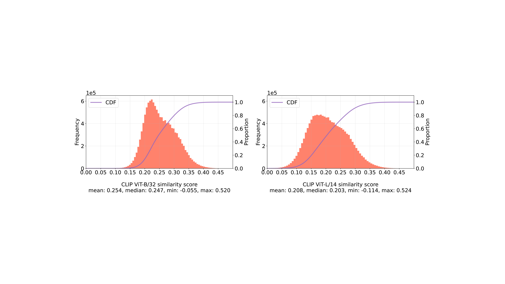
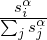

Equal contribution, randomly ordered. Correspondence to contact@datacomp.ai. 1University of Washington
2Columbia University 3Tel Aviv University 4Apple 5UT Austin 6LAION 7AI2 8Juelich Supercomputing Center,
Research Center Juelich 9University of Illinois Urbana-Champaign 10Graz University of Technology 11Hebrew
University.
datacomp:
In search of the next generation of multimodal datasets
Samir Yitzhak Gadre*2 Gabriel Ilharco*1 Alex Fang*1 Jonathan Hayase1 Georgios Smyrnis5
Thao Nguyen1 Ryan Marten7,9 Mitchell Wortsman1 Dhruba Ghosh1 Jieyu Zhang1
Eyal Orgad3 Rahim Entezari10 Giannis Daras5 Sarah Pratt1 Vivek Ramanujan1
Yonatan Bitton11 Kalyani Marathe1 Stephen Mussmann1 Richard Vencu6
Mehdi Cherti6,8 Ranjay Krishna1 Pang Wei Koh1 Olga Saukh10 Alexander Ratner1
Shuran Song2 Hannaneh Hajishirzi1,7 Ali Farhadi1 Romain Beaumont6
Sewoong Oh1 Alexandros G. Dimakis5 Jenia Jitsev6,8
Yair Carmon3 Vaishaal Shankar4 Ludwig Schmidt1,6,7
Large multimodal datasets have been instrumental in recent breakthroughs such as CLIP,
Stable Diffusion, and GPT-4. At the same time, datasets rarely receive the same research
attention as model architectures or training algorithms. To address this shortcoming in the
machine learning ecosystem, we introduce datacomp, a participatory benchmark where the
training code is fixed and researchers innovate by proposing new training sets. Concretely,
we provide a testbed for dataset experiments centered around a new candidate pool of 12.8B
image-text pairs from Common Crawl. Participants in our benchmark design new filtering
techniques or curate new data sources and then evaluate their new dataset by running our
standardized CLIP training code and testing the resulting model on 38 downstream test sets.
Our benchmark consists of multiple scales, with four candidate pool sizes and associated compute
budgets ranging from 12.8M to 12.8B samples seen during training. This multi-scale design
facilitates the study of scaling trends and makes the benchmark accessible to researchers with
varying resources.
Our baseline experiments show that the datacomp workflow is a promising direction for
improving multimodal datasets. We introduce datacomp-1B, a dataset created using a simple
filtering algorithm applied to the 12.8B candidate pool. The resulting 1.4B subset enables
training a CLIP ViT-L/14 from scratch to 79.2% zero-shot accuracy on ImageNet. Our new
ViT-L/14 model outperforms a larger ViT-g/14 trained on LAION-2B by 0.7 percentage points
while requiring 9× less compute during training. We also outperform OpenAI’s CLIP ViT-L/14
by 3.7 percentage points, which is trained with the same compute budget as our model. These
gains highlight the potential for improving model performance by carefully curating training
sets. We view datacomp-1B as only the first step and hope that datacomp paves the way
toward the next generation of multimodal datasets.
We publicly release our datasets, associated tooling, filtering baselines, and our code for
training and evaluating models at www.datacomp.ai.
1 Introduction
The past two years have seen multiple breakthroughs in multimodal learning. A new family of models
including CLIP [104], DALL-E [108, 109], Stable Diffusion [116], Flamingo [4], and GPT-4 [96] offer
unprecedented generalization capabilities in zero-shot classification, text-guided image generation, and
in-context learning. While these advances use different algorithmic techniques such as contrastive learning,
diffusion, or auto-regressive modeling, they all rest on a common foundation: large datasets containing
paired image-text examples. For instance, CLIP’s training set contains 400 million image-text pairs, and
Stable Diffusion was trained on subsets of LAION-2B [122], a dataset of more than two billion
image-text pairs. This new generation of image-text datasets is more than 1,000 times larger than
previous training datasets such as the widely used ImageNet, which contains 1.2M images
[33, 119].
Table 1: Zero-shot performance of CLIP models trained on various datasets. Our dataset
datacomp-1B, assembled with a simple filtering procedure on image-text pairs from Common
Crawl, leads to a model with higher accuracy than previous results while using the same or less
compute. Training compute is measured in the total number of multiply-accumulate operations
during training (MACs). See Section 3.5 for details on the evaluation datasets.
| | | # samples | | Train compute | ImageNet | Avg. performance |
|
Dataset |
Dataset size | seen |
Architecture | (MACs) | accuracy | (38 datasets) |
| OpenAI’s WIT [104] | 0.4B | 13B | ViT-L/14 | 1.1 × 1021 | 75.5 | 0.61 |
| LAION-400M [121, 24] | 0.4B | 13B | ViT-L/14 | 1.1 × 1021 | 73.1 | 0.58 |
| LAION-2B [122, 24] | 2.3B | 13B | ViT-L/14 | 1.1 × 1021 | 73.1 | 0.59 |
| LAION-2B [122, 24] | 2.3B | 34B | ViT-L/14 | 2.6 × 1021 | 75.2 | 0.61 |
| LAION-2B [122, 24] | 2.3B | 34B | ViT-H/14 | 6.5 × 1021 | 78.0 | 0.64 |
| LAION-2B [122, 24] | 2.3B | 34B | ViT-g/14 | 9.9 × 1021 | 78.5 | 0.64 |
| datacomp-1B (ours) | 1.4B | 13B | ViT-L/14 | 1.1 × 1021 | 79.2 | 0.66 |
| |
Despite the central role large image-text datasets play in multimodal learning, little is known about them.
Many state-of-the-art datasets are proprietary and only available in corporate research labs, as in the case
of CLIP [104], DALL-E [108, 109], Flamingo [4], and GPT-4 [96]. But even for public datasets such as
LAION-2B [122], it is unclear how design choices during dataset construction, such as the data source or
filtering techniques, affect the resulting models. While there are thousands of ablation studies for
algorithmic design choices (loss function, optimizer, model architecture, etc.), datasets are usually treated
as monolithic artifacts without detailed investigation or further improvements. Moreover, datasets
currently lack the benchmark-driven development process that has enabled the community to produce a
steady stream of advances on the model side. These issues impede further progress in multimodal
learning, as evidenced by recent work showing that public datasets currently do not match the
scaling behavior of proprietary alternatives [24]. A key difficulty for improving datasets is the
scarcity of data-centric benchmarks that isolate dataset enhancements from changes to the
model.
In this paper, we take a step towards a more rigorous dataset development process via five contributions.
Our first and central contribution is DataComp, a new benchmark for multimodal dataset
design. datacomp flips the traditional benchmarking paradigm in machine learning where the dataset is
fixed and the research community proposes new training algorithms. Instead of a fixed dataset, we hold the
training code, model, and computational budget constant so that participants innovate by proposing new
training sets. To evaluate the quality of a training set, we score the resulting model with a broad
testbed of 38 classification and retrieval tasks such as ImageNet [33], ImageNetV2 [114], DTD
[26], EuroSAT [57], PatchCamelyon [133], SUN-397 [137], MSCOCO [22], and WinoGAViL
[13].
datacomp focuses on two key challenges that arise when assembling large training datasets: what data
sources to train on, and how to filter a given data source. Each challenge corresponds to one track in our
benchmark. To facilitate the filtering track, our second contribution is CommonPool, a dataset of
12.8B image-text pairs collected from Common Crawl. In the filtering track, the goal
of participants is to find the best subset of commonpool to train on. commonpool is
currently the largest publicly released image-text dataset, exceeding the size of LAION-5B
by a factor of 2.5×. Additionally, we apply explicit content checks and face blurring when
constructing commonpool to improve the safety of image-text datasets. In the second track, Bring
Your Own Data (byod), participants can leverage any data source of their choice, as long
as the training data does not overlap with our evaluation testbed. Taken together, our two
tracks provide a controlled environment to better understand dataset curation for multimodal
learning.
Our third contribution is an investigation of scaling trends for dataset design. In particular,
datacomp contains four distinct compute and data scales. On the data side, the candidate pool for
filtering ranges from 12.8M samples to 12.8B samples. On the compute side, the training budget scales
accordingly from 12.8M to 12.8B samples seen during training. This choice of pool size and compute
budget leads to the natural baseline of training on the entire candidate pool with a single training pass
and no filtering. Expressed in GPU hours, the cost of a single training run ranges from 4 to
40,000 GPU hours on the A100 cluster we used for development. This 10,000× range stems
from a factor 1,000× in pool size and another factor 10× from scaling the model size. The
different scales enable researchers with different resources to participate in our benchmark.
Moreover, the multi-scale format facilitates studying scaling trends. Our results show that the
order of several filtering approaches is largely consistent across multiple compute and data
scales.

Figure 1: Participant workflow. A) Participants first choose a scale, small, medium, large or xlarge,
based on their resource constraints (submission to multiple scales is allowed). B) Participants
create a candidate dataset, choosing one of two tracks: filtering, where only image-text pairs
from commonpool are allowed; or byod, where any data source (including commonpool) is
permitted. C) Participants train a CLIP model on their candidate pool using a fixed architecture
and hyperparameters (Section 3.4). D) Participants evaluate the trained model on a suite of diverse
downstream tasks (Section 3.5) and submit to our leaderboard.
Our fourth contribution are over three hundred baseline experiments and resulting insights into how
dataset curation methods compare. Our baselines span basic techniques such as removing small
images or non-English captions, querying captions for relevant keywords, filtering based on
image embeddings, and applying a threshold on CLIP scores. A key result from our baselines
experiments is that smaller, more stringently filtered datasets can lead to models that generalize
better than larger datasets coming from the same pool. At the 12.8B scale, our best filtering
baseline increases ImageNet zero-shot accuracy by 6.9 percentage points (pp) relative to the
unfiltered pool (see Table 3). For the byod track, our initial experiments with multiple data
sources find that 109M additional data points (less than 1% of the pool size) improve the
CLIP-filtered subsets of commonpool by up to 1.2 pp ImageNet accuracy at the 12.8B scale (see
Table 4).
Finally, our fifth contribution is DataComp-1B, a new state-of-the-art multimodal dataset that
can be used as a drop-in replacement for previous image-text datasets such as LAION-2B.
datacomp-1B is a filtered subset of commonpool containing 1.4B image-text pairs and demonstrates
that improving data curation can yield large performance gains. We obtained datacomp-1B
by combining our two most promising baselines from smaller scale experiments: CLIP score
filtering and image-based filtering. datacomp-1B enables training a CLIP ViT-L/14 model
with a compute budget of 12.8B samples to an ImageNet zero-shot accuracy of 79.2% (see
Table 1). This model, trained on datacomp-1B, outperforms a larger CLIP ViT-g/14 model
trained on LAION-2B for about 3× longer (34B samples seen), corresponding to a an 9×
overall reduction in compute cost. Moreover, our model outperforms OpenAI’s original CLIP
ViT-L/14 by 3.7 percentage points, which is trained with the same compute budget of 12.8B
samples as our model. We view datacomp-1B as only the first new dataset coming out of
datacomp and expect that future work will leverage our benchmark to discover further dataset
improvements.
We hope that datacomp serves as a starting point for new creative research on dataset curation by
making it easier to conduct controlled experiments in a shared experimental setting. To enable future
work, we publicly release our candidate pools, our tooling for assembling these pools, our filtering
baselines, and our code for training and evaluating models at www.datacomp.ai. We present an overview of
the participant workflow in Figure 1. We believe that our infrastructure will help put research on dataset
curation on rigorous empirical foundations, draw attention to this understudied research area, and lead to
the next generation of multimodal datasets.
2 Related Work
Due to space constraints, we discuss work that is closest to datacomp here and refer the reader to
Appendix C for additional related work.
The effects of data curation.
Classical work considers dataset cleaning and outlier removal [66, 143, 117, 118] to discard samples
that may lead to undesirable model bias. A related line of work develops coreset selection
algorithms [55, 3, 42, 7, 87, 136, 28], which aim to select data subsets that lead to the same
performance as training on the entire dataset. These techniques are known to scale poorly to
larger data regimes [47, 2], which are critical for modern deep learning algorithms. More recent
efforts in subset selection often operate on already curated datasets [91, 132, 123, 12, 29, 99]
like CIFAR-10, ImageNet or on smaller data regimes (e.g., YFCC-15M [104, 131]). These
settings often do not reflect newer training paradigms that involve (1) noisy image-text pairs
instead of category labeled images and (2) large scale datasets (e.g., billions of samples). While
data-centric investigations have led to community competitions like dcbench [39] and dataperf
[90], existing benchmarks have likewise operated at small data scales [93], especially when
compared to datasets like LAION-2B [122], which contains over two billion images. datacomp
bridges this gap to better align dataset curation algorithms with modern large scale image-text
training.
There has also been renewed interest in dataset pruning and deduplication. Sorscher et al. [126] show that
data pruning can be used to outperform traditional power-law scaling trends on ImageNet, but
do not consider image-text training or larger datasets. Raffel et al. [106] attempt to remove
sentence redundancies when creating the C4 corpus. Subsequent work further demonstrated the
benefits of deduplication for better language modeling [83]. Radenovic et al. [103] introduce
CAT filtering for image-text datasets—a rule based system to retain high quality samples.
Abbas et al. [2] introduce SemDeDup, which starts with the CAT-filtered LAION-440M subset,
further employing a clustering method to removes semantic duplicates. SemDeDup improves
training speed; however, the resulting models show similar zero-shot ImageNet performance
when compared to models trained on the original dataset. At our largest scale, we introduce a
pool of 12.8B image-text pairs, which is an order of magnitude larger than the data pools
considered in either CAT or SemDeDup. Hence, we hope the datacomp benchmark will
bootstrap future data-centric exploration at a scale that is unprecedented in non-proprietary
research.
Large-scale multimodal datasets.
Datasets have been instrumental to build multimodal models like CLIP [104], Flamingo [4], Stable
Diffusion [116], DALL-E [108, 109] and GPT-4 [96]. These methods succeeded by training on large,
heterogeneous datasets rather than solely through advanced modelling techniques. For example, OpenAI’s
CLIP trains on 400M image-text pairs from the web, roughly 300× the size of ImageNet [33]. Prior work
on scaling image-text datasets also provides promising trends with respect to zero-shot model
performance [65, 100]. Additional large scale datasets like FILIP-300M [140], FLD-900M [144], and
PaLI-10B [21] were constructed to train multimodal models. However, many datasets used to train such
models (including the dataset for OpenAI’s CLIP) are proprietary, making it hard to conduct data-centric
investigations.
Even for public image-text datasets like SBU [97], Flickr30k [142], MS-COCO [22], Conceptual Captions
[124], CC12M [20], RedCaps [34], WIT [127], Shutterstock [94], YFCC-100M [131], COYO-700M [16],
LAION-400M [121], or LAION-2B [122] little is known about what constitutes a good image-text dataset.
Preliminary analysis suggests that different image-text data sources lead to CLIP models with different
properties [94]. However, previous work is limited to smaller scale data (10-15M examples). Our work
provides a testbed for conducting controlled experiments on how different data curation techniques affect
models. Our benchmark spans several orders of magnitude in compute and data scale. It includes the
largest publicly available collection of image-text pairs, with 12.8B samples. Birhane et al. [11]
examine the LAION-400M dataset and find a plethora of problematic content, including NSFW
imagery and racial slurs. In doing so, they center the dangers in web-scale multimodal datasets.
In an effort to combat toxicity, we preprocess dataset samples with NSFW models during
pool construction and remove flagged content. We also blur faces detected in images to make
individuals less recognizable. For more details on our safety preprocessing see Section 3.2,
Appendices E and G.
3 datacomp
The goal of datacomp is to place dataset curation on rigorous empirical foundations, making it easier to
conduct controlled experiments in a shared experimental setting. In contrast to traditional
benchmarks where participants iterate on model design and hyperparameter tuning, datacomp asks
participants to design datasets that lead to high accuracy under fixed experimental conditions
on the modeling side. Our benchmark focuses on large image-text datasets and evaluates a
new dataset by training a CLIP model on the dataset from scratch [104]. To facilitate such
investigations, we provide a candidate pool of uncurated image-text pairs crawled from the public
internet.
Our benchmark offers two tracks: one where participants must use only samples from the pools we
provide, and another where participants can use external data in addition to samples from our
pool. Moreover, datacomp is structured to accommodate participants with diverse levels of
computational resources: each track is broken down into four scales with varying compute
requirements.
In this section, we discuss several design considerations including the benchmark tracks, experimental
details for training, datasets used for evaluation, and the rules of the competition.
3.1 Competition design
The first question when designing a datasets benchmark is how to enable meaningful comparisons
between different datasets. In numerous areas of machine learning, larger datasets lead to better
performance [80, 71, 65, 100, 60, 24, 15, 104, 105]. Hence a natural starting point for a
dataset benchmark would be to compare datasets of the same size only. While intuitive, this
approach is flawed when it comes to contemporary large training sets for multimodal models. In
particular, controlling the dataset size ignores the creation process behind the dataset and
thereby fails to control for the actually relevant quantities: pool size and training compute. To
illustrate this point, we now briefly summarize how state-of-the-art multimodal datasets are
assembled.
At a high level, assembling a dataset such as LAION-2B consists of two steps. The first step is to identify
one or multiple data sources, e.g., a web crawl such as Common Crawl or a widely used website such as
Reddit. The data source should provide many training examples covering a broad distribution and come
with supervision signals such as nearby text. After identifying a suitable set of data sources, the next step
is to filter the data source to remove data points with low-quality annotations or other deficiencies (blurry
images, etc.). The final dataset then contains all examples from the data sources that pass the data
curation filters.
An important aspect of this dataset creation process is that the final dataset size is a design choice and
not fixed ahead of time by the data sources. In particular, the dataset designer faces a trade-off between
the dataset size (more data points are better) and data quality (higher quality data points are better).
Hence the true data constraint in web-scale training set curation is not the size of the final dataset, but the
size of the candidate pool. To make datacomp a realistic benchmark for dataset curation
that can inform future dataset projects, we therefore fix the candidate pool participants work
with in the filtering track, but otherwise give participants full control over the training set
size.
Besides the size of the candidate pool, the other practically relevant constraint when training a model is
the compute cost. In order to put training sets of different size on equal footing, we specify the training
compute in terms of the total number of samples seen during training, not in terms of how many passes
(epochs) the training run makes over the training set. As a concrete example, consider the 12.8B candidate
pool, for which we fix a compute budget of 12.8B examples seen. A participant may choose to
build a training set A with 3.2B data points by removing 75% of the candidate pool. The
datacomp training code would then make four passes over this training set A. Alternatively, a
participant may filter more aggressively and end up with a dataset B containing only 1.6B
examples (i.e., removing 87.5% of the candidate pool). In this case, the training code would
make eight passes over training set B so that the total amount of training compute remains
constant (12.8B samples seen). A key result from our baselines experiments in datacomp is that
smaller, more stringently filtered datasets can lead to models that generalize better than larger
datasets coming from the same pool of images when the total amount of training compute is
constant.
This realistic, pool-centric perspective on dataset curation is one of they key design decisions in
datacomp. We now briefly review the other design decisions such as the division into two competition
tracks, our multi-scale structure and the construction of the candidate pool. Additional design
decisions including our training and evaluation protocols are discussed in Sections 3.4 and
3.5.
Competition tracks.
As mentioned above, the two key steps in assembling a training dataset are filtering an existing pool of
data [121, 122, 16] and aggregating different data sources [32, 33]. To compare methods for these two
approaches separately, datacomp has two tracks: filtering, where participants must select a subset of the
samples from commonpool, and Bring Your Own Data (byod), where participants are
allowed to use any source of external data. The tracks are described in Sections 3.2 and 3.3,
respectively.
Table 2: Experimental configuration for each scale. The number of samples seen during training
at the largest scale is chosen to match the experimental setup from Radford et al. [104]. Training
compute is measured in the total number of multiply-accumulate operations (MACs).
| Scale | Model | Train compute (MACs) | Pool size and # samples seen |
| small | ViT-B/32 | 9.5 × 1016 | 12.8M |
| medium | ViT-B/32 | 9.5 × 1017 | 128M |
| large | ViT-B/16 | 2.6 × 1019 | 1.28B |
| xlarge | ViT-L/14 | 1.1 × 1021 | 12.8B |
| |
Competition scales.
To facilitate the study of scaling trends and accommodate participants with various levels of
computational resources, we structure datacomp using four scales of compute: small, medium, large and
xlarge. Each new scale increases the number of samples seen during training by 10× (from 12.8M to
12.8B samples seen), and the pool we provide by the same factor (from 12.8M samples to
12.8B samples). Table 2 describes the experimental configuration used for training at each
scale.
Preprocessing and safety.
Creating a dataset from a noisy web source such as Common Crawl involves many design decisions, e.g.,
whether one should de-duplicate images, keep only English captions, or restrict the image sizes. We
decided to grant participants a high degree of autonomy and kept our initial preprocessing of
commonpool to a minimum, leaving these design decisions open for exploration. Our only initial
preprocessing steps are to eliminate images that appear in downstream evaluation datasets or are flagged
due to safety considerations. For the latter, we take steps to eliminate illegal and explicit content and to
protect the privacy of individuals. Specifically, we remove unsafe images and captions with automated
filters and obfuscate faces in the candidate images we provide. Section 3.2 describes these steps in more
detail.
Competition rules.
We include comprehensive rules in Appendix A. Briefly, for the filtering track, we do not allow usage of
test images from our evaluation suite, but do allow users to use the training images for their filtering
algorithms. For byod, we like-wise allow the use of training sets, but lift the restriction that
commonpool must be used.
3.2 commonpool generation
We construct commonpool, a large-scale dataset of image-text pairs sourced from Common
Crawl.
Our pool construction pipeline has four major steps: URL extraction and data download, NSFW detection,
evaluation test set deduplication, and face blurring. We additionally provide metadata (e.g., CLIP
features) for each sample in the pool. Starting from the xlarge commonpool, we take successive
random subsets to create large, medium, and small commonpool (e.g., medium is a subset of
large). An overview of the effect of each step in our pool generation pipeline in shown in Figure
2.

Figure 2: Data funnel going from potential samples found in Common Crawl to the 13.1B
image-text pairs that were suitable for commonpool. We sampled uniformly 12.8B datapoints for
the xlarge commonpool.
Extracting urls and dowloading data.
We first use cc2dataset ,
which utilizes Apache Spark [146], to 1) extract image urls with nonempty alt-text from all Common
Crawl dumps from 2014 to 2022 and 2) deduplicate and randomly shuffle the resulting set of image url,
alt-text pairs. Our processing results in in ~88B possible samples. Not all samples are downloadable due
to dead links; other samples are not suitable for inclusion in commonpool due to NSFW
content or overlap with our evaluation sets. Hence, we attempt to download ~40B samples using
img2dataset
resulting in ~16.8B successfully downloaded image-text pairs. For details, see Appendix D.
NSFW preprocessing.
Since Common Crawl is a snapshot of the internet, we require strict preprocessing to remove unsafe
content. We first use Detoxify [54] to prune samples that contain unsafe text (e.g., obscene, sexually
explicit, or threatening language). We also employ an image classifier to discard explicit visual content. To
do so, we train a classifier on CLIP ViT-L/14 [104] features, using the NSFW dataset used in
LAION-5B [122]. We validate our classifier against the Google commercial image safety API. See
Appendix E for details. Overall, ~19% of image-text pairs are considered NSFW, taking our pool of
~16.8B downloads to ~13.6B samples.
Evaluation set deduplication.
To prevent accidental overfitting to certain test sets in our evaluation suite, we perform a thorough
near-duplicate removal between the candidate pool and our evaluation sets, using a state-of-the-art image
deduplication model [141]. Appendix F contains additional details. The model flags ~3% of the 16.8B
images as near-duplicates, reducing the ~13.6B pool to ~13.1B samples. From here we select a random
subset to get the xlarge pool of 12.8B samples.
Face detection & blurring.
To protect the privacy of individuals, we detect and blur faces from images in our pool using a face
detector [49]. As observed by Yang et al. [139], obfuscating faces has little impact on model performance,
as we also observe in our experiments (Appendix G).
Pool metadata.
Motivated by the LAION-400M data curation procedure, which employs similarity scores between CLIP
image and text features, we compute additional metadata for each sample in commonpool. To bootstrap
participants in their exploration of filtering algorithms, we provide image url, alt-text, original image width
and height, CLIP image and text features, and CLIP image-text similarity scores. We also release a
SHA256 hash of each image to guard against data poisoning in subsequent commonpool downloads [18].
For additional details see Appendix H. Metadata is meant to ease the computational burden on
participants; however, we encourage exploring curation techniques that go beyond the provided
metadata.
3.3 Bring your own data (byod)
While commonpool can be used to study different filtering techniques, state-of-the-art models are often
trained on heterogeneous data pools from different sources. For instance, the Flamingo model [4] uses both
curated data from multimodal massive web (M3W) and the ALIGN dataset [65]. To facilitate
non-proprietary research on curating data from many sources, we instantiate a separate track in
datacomp to allow participants to combine multiple data streams. For example, participants could
construct a training set from CC12M [20], YFCC100M [131], and data sources they label
themselves. In Section 4.2 and Appendix O.2 we describe our exploration of using other public
datasets.
3.4 Training
We create a common experimental setting that enables controlled and comparable experiments by fixing
the training procedure (i.e., model architecture, optimizer, loss, hyperparameters, etc.) and compute at
each scale. We closely follow the training recipe used to train state-of-the-art CLIP models from Radford
et al. [104], training models from scratch with a contrastive objective over images and captions. Given a
set of image-caption pairs, we train an image encoder and a text encoder such that the similarity between
the representations of images and their corresponding text is maximized relative to unaligned
pairs.
For each scale, we use a fixed model architecture and set of hyperparameters. We pick Vision
Transformers (ViTs) [35] as the image encoder, considering the better scaling trends observed by
Radford et al. [104] compared to ResNets [56]. The size of the model varies with the scale, using
a ViT-B/32 for the small and medium scales, a ViT-B/16 for the large scale and ViT-L/14
for the xlarge scale. Models are trained for a fixed number of steps determined by the scale
(Table 2), using the OpenCLIP repository [62]. We closely follow the training procedure from
Radford et al. [104], using the Adam optimizer [73] with decoupled weight decay [86] on all
weights except gains or biases with β1 = 0.9, β2 = 0.98 and weight decay of 0.2. For the xlarge
scale, we use β2 = 0.95 to prevent instability. The models are trained with automatic mixed
precision and a cosine annealing learning rate schedule [85]. For the small scale, our internal
training runs took four hours on one A100 GPU, and for the xlarge scale, 81 hours on 512
GPUs. Additional details including other scale-specific hyperparameters are shown in Appendix
M.
3.5 Evaluation
We evaluate on an extensive suite of 38 image classification and retrieval tasks. We also provide an
in-depth analysis on two fairness-related datasets, detailed in Section 5 and Appendix P. Image
classification datasets range from satellite imagery recognition to classifying metastatic tissues from
histopathologic scans, including (with some overlap): 22 of the datasets evaluated in Radford et al. [104],
6 ImageNet distribution shifts, 11 datasets from the Visual Task Adaptation Benchmark (VTAB) [147],
and 3 datasets from the WILDS benchmark [76, 120]. Retrieval datasets include the Flickr30k [142] and
MSCOCO image and text retrieval datasets [22], as well as the WinoGAViL commonsense image-text
associations task [13]. To aggregate results over all evaluation tasks, we average the preferred metric for
each task. As discussed in Section 3.2, we remove all test set images from the pool we provide to avoid
contamination.
datacomp adopts a zero-shot evaluation protocol, which means models are tested without training on the
evaluation tasks. This approach is computationally efficient and measures a model’s ability to perform well
without any additional training, in contrast to methods such as linear probing or end-to-end fine-tuning.
As an additional validation step, we find a strong correlation (>0.99) between performance using a linear
probe and that in a zero-shot setting, as seen in Appendix Figure 17. Additional details are in
Appendix N.
4 Baselines
4.1 Filtering baselines
We study six simple filtering methods for the filtering track; see Section O.1 for further details.
No filtering.
We simply use the entire pool as the subset, without any filtering. Since each pool size is equal to the
sample budget, training consists of one pass over the data.
Random subsets.
To isolate the effects of increasing the compute budget from increasing the dataset size, we form subsets
consisting of 1%, 10%, 25%, 50% and 75% of the pool chosen at random.
Basic filtering.
We consider a number of simple filtering operations inspired by Schuhmann et al. [121] and Byeon
et al. [16]: filtering by language (only English captions, using either fasttext [69] or cld3 [1]); filtering by
caption length (over two words and 5 characters); and filtering by image size (smaller dimension above 200
pixels and aspect ratio below 3). We also experiment with combining the first two methods
(language + caption length) and all three (language + caption length + image size). Unless
otherwise specified, “basic” refers to filtering by fasttext language, caption length, and image
size.
CLIP score and LAION filtering.
We experiment with the main filtering strategy employed by LAION, where we take only
examples where the cosine similarity score between CLIP image and text embeddings exceeds a
pre-defined threshold. We investigate a range of thresholds and two OpenAI CLIP models for
computing the scores: the ViT-B/32 model (as in LAION) and the ViT-L/14. Furthermore,
we combine CLIP score thresholds and English filtering using cld3 in order to reproduce the
LAION-2B filtering scheme. Table 14 in Section O.1 summarizes the different CLIP score threshold
configurations.
Text-based filtering.
We select examples that contain text overlapping with ImageNet class names, which serves as a
proxy for relevance to downstream tasks. Specifically, we select English captions (according
to fasttext) that contain words from synsets corresponding to classes in ImageNet-21K or
ImageNet-1K [33].
Image-based filtering.
We select a subset of examples whose visual content overlaps with ImageNet classes. After applying
language (fasttext) and caption length filtering on the data, we cluster the image embeddings extracted
from the OpenAI ViT-L/14 model of the candidate pool into 100K groups using Faiss [67]. We then find
the nearest neighbor cluster center for every ImageNet training example, and keep examples whose
corresponding cluster center is a nearest neighbor to at least one ImageNet image. We apply this
procedure using either ImageNet-21K (14M images) or ImageNet-1K (1.2M images), forming two
subsets.
4.2 byod baselines
We experiment with multiple external data sources, including four moderately sized datasets (10 to 58M
samples) studied by Nguyen et al. [94]—CC12M [20], YFCC15M [131, 104], RedCaps [34] and
Shutterstock [94]—and the larger LAION-2B [122]. Additional experiments, along with more
details about the data sources are provided in Appendix O.2. We consider these data sources as
they are and do not perform additional preprocessing. We also present experiments combining
some of the data sources (using only the external datasets, or in addition to data from our
pool).
Table 3: Zero-shot performance for select baselines in the filtering track. On all scales, various
filtering strategies lead to better performance than using the entire pool without filtering. The
intersection between imaged-based and CLIP score strategies performs well on most tasks and scales.
For all metrics, higher is better (see Appendix N for details). ∩ denotes the intersection between
filtering strategies.
| | | Dataset | Samples | | ImageNet | | | Average over |
|
Scale |
Filtering strategy | size | seen |
ImageNet | dist. shifts |
VTAB |
Retrieval | 38 datasets |
| | No filtering | 12.8M | 12.8M | 0.025 | 0.033 | 0.145 | 0.105 | 0.132 |
| | Basic filtering | 3M | 12.8M | 0.030 | 0.040 | 0.149 | 0.111 | 0.137 |
| | Text-based | 3.2M | 12.8M | 0.046 | 0.052 | 0.169 | 0.112 | 0.156 |
| | Image-based | 3M | 12.8M | 0.043 | 0.047 | 0.178 | 0.112 | 0.158 |
| | LAION-2B filtering | 1.3M | 12.8M | 0.031 | 0.040 | 0.136 | 0.085 | 0.133 |
| | CLIP score (L/14 30%) | 3.8M | 12.8M | 0.051 | 0.055 | 0.190 | 0.108 | 0.172 |
|
small | Image-based ∩ CLIP score (L/14 30%) | 1.4M | 12.8M | 0.039 | 0.045 | 0.162 | 0.089 | 0.144 |
| | No filtering | 128M | 128M | 0.176 | 0.152 | 0.259 | 0.174 | 0.254 |
| | Basic filtering | 30M | 128M | 0.226 | 0.193 | 0.284 | 0.192 | 0.280 |
| | Text-based | 31M | 128M | 0.255 | 0.215 | 0.328 | 0.183 | 0.301 |
| | Image-based | 29M | 128M | 0.268 | 0.213 | 0.319 | 0.193 | 0.307 |
| | LAION-2B filtering | 13M | 128M | 0.230 | 0.198 | 0.307 | 0.170 | 0.287 |
| | CLIP score (L/14 30%) | 38M | 128M | 0.273 | 0.230 | 0.338 | 0.183 | 0.323 |
|
medium | Image-based ∩ CLIP score (L/14 30%) | 14M | 128M | 0.297 | 0.239 | 0.346 | 0.170 | 0.323 |
| | No filtering | 1.28B | 1.28B | 0.459 | 0.378 | 0.426 | 0.305 | 0.428 |
| | Basic filtering | 298M | 1.28B | 0.516 | 0.423 | 0.446 | 0.353 | 0.448 |
| | Text-based | 317M | 1.28B | 0.561 | 0.465 | 0.465 | 0.352 | 0.466 |
| | Image-based | 293M | 1.28B | 0.572 | 0.454 | 0.483 | 0.353 | 0.471 |
| | LAION-2B filtering | 130M | 1.28B | 0.553 | 0.453 | 0.510 | 0.365 | 0.491 |
| | CLIP score (L/14 30%) | 384M | 1.28B | 0.578 | 0.474 | 0.538 | 0.342 | 0.520 |
|
large | Image-based ∩ CLIP score (L/14 30%) | 140M | 1.28B | 0.631 | 0.508 | 0.546 | 0.369 | 0.527 |
| | No filtering | 12.8B | 12.8B | 0.723 | 0.612 | 0.611 | 0.441 | 0.611 |
| | LAION-2B filtering | 1.3B | 12.8B | 0.755 | 0.637 | 0.624 | 0.503 | 0.627 |
| | CLIP score (L/14 30%) | 3.8B | 12.8B | 0.764 | 0.655 | 0.643 | 0.468 | 0.641 |
|
xlarge | Image-based ∩ CLIP score (L/14 30%) | 1.4B | 12.8B | 0.792 | 0.679 | 0.652 | 0.489 | 0.653 |
| |
5 Results and discussion
5.1 Building better datasets
Main results.
Our key results are in Table 3. Most notably, the intersection between image-based filtering and CLIP score
filtering taking the top 30% examples with highest scores using a ViT-L/14 model excels on most tasks.
The exception is for the small scale and the retrieval datasets, where other filtering approaches perform
better.
Furthermore, other filtering strategies like basic, CLIP score, image-based, text-based filtering show better
downstream performance when compared to no filtering. While Table 3 shows a summary of our key
results, we present a much larger suite of experiments in Appendix Q.
DataComp leads to better image-text datasets.
We hope datacomp catalyzes the search for the next generation of multimodal datasets. Towards this
end, we contribute datacomp-1B, which is a direct result of the datacomp benchmark workflow.
datacomp-1B is the output from the Image-based ∩ CLIP score (L/14 30%) baseline filter at the
xlarge scale of the filtering track. Our dataset is comprised of 1.4B samples, which is smaller
than the LAION-2B dataset with 2.3B samples. Additionally, datacomp-1B is built from a
smaller pool than the one used to create LAION-2B, which means direct comparisons are
likely skewed in favor of LAION-2B. Nevertheless, a CLIP L/14 trained on datacomp-1B
outperforms the LAION-2B competitor by 6.1 percentage points on ImageNet as seen in Table 1.
Moreover, training on datacomp-1B improves ImageNet accuracy by 3.7 percentage points over
OpenAI’s ViT-L/14 trained with the same compute budget. These results underscore the impact
that datacomp can make and provide a promising foundation upon which participants can
build.
Table 4: Zero-shot performance for select baselines in the byod track. External data sources
can be effective in isolation or in combination with CommonPool. Moreover, upsampling external
curated sources can improve performance.
|
Scale |
Data source | Dataset | Samples |
ImageNet | ImageNet |
VTAB |
Retrieval | Average over |
| | | size | seen | | dist. shifts | | | 38 datasets |
| | CC12M | 10M | 128M | 0.245 | 0.189 | 0.283 | 0.206 | 0.266 |
| | YFCC15M | 15M | 128M | 0.232 | 0.137 | 0.263 | 0.174 | 0.251 |
| | RedCaps | 11M | 128M | 0.237 | 0.166 | 0.271 | 0.150 | 0.261 |
| | Shutterstock | 58M | 128M | 0.342 | 0.209 | 0.364 | 0.248 | 0.323 |
| | 4 external sources | 109M | 128M | 0.378 | 0.262 | 0.392 | 0.210 | 0.348 |
| | commonpool, CLIP score filter | 38M | 128M | 0.273 | 0.230 | 0.338 | 0.183 | 0.323 |
|
medium | + 4 external sources | 147M | 128M | 0.372 | 0.269 | 0.401 | 0.203 | 0.357 |
| | LAION-2B | 2.3B | 1.28B | 0.585 | 0.472 | 0.504 | 0.399 | 0.505 |
| | commonpool, CLIP score filter | 0.4B | 1.28B | 0.578 | 0.474 | 0.538 | 0.342 | 0.520 |
| | + 4 external sources | 0.5B | 1.28B | 0.609 | 0.508 | 0.546 | 0.303 | 0.525 |
|
large | + 4 external sources (upsampled 2x) | 0.5B | 1.28B | 0.621 | 0.509 | 0.547 | 0.315 | 0.530 |
| | LAION-2B | 2.3B | 12.8B | 0.757 | 0.631 | 0.611 | 0.502 | 0.612 |
| | commonpool, CLIP score filter | 3.8B | 12.8B | 0.764 | 0.655 | 0.643 | 0.468 | 0.641 |
|
xlarge | + 4 external sources (upsampled 6x) | 3.9B | 12.8B | 0.776 | 0.671 | 0.633 | 0.410 | 0.638 |
| |
External data sources can improve performance.
Table 4 shows results for several baselines in the byod track. Compared to the best baselines in the
filtering track, training on each external data source separately for the medium scale performs worse, but
using all four sources together significantly improves accuracy, especially on ImageNet. At the large scale,
combining CLIP-filtered data from the filtering track with external data from the four sources further
boosts ImageNet accuracy by up to 4.3 percentage points. This approach also surpasses using
LAION-2B. In Appendix O.2 we further examine the external data sources and show additional
experiments.
English filtering is helpful but not necessary.
Given that the prompts used in downstream tasks are in English, a natural question is how critical
is English filtering for achieving good performance. We try filtering our pool by removing
non-English captions, with both cld3 and fasttext as language detectors. Although the two vastly
differ in percentage of English captions detected (20% and 50% respectively), filtering with
both of them results in similar performances at all scales. For basic filtering, English filtering
is a key component in our best performing baselines (see Appendix Q). On the other hand,
English filtering is not necessary to achieve good performance. When using English filtering in
combination with CLIP score filtering, performance stays the same or decreases at all scales.
Figure 24 in the appendix suggests that CLIP score filtering implicitly does some English
filtering, which may be a result of the CLIP models being trained on English filtered data
[104].
Trade-off between data diversity and repetition.
When we have large pools of data, is it useful to see samples more than once during training? In Figure 3,
we show that randomly selecting subsets of the pool typically has little effect or degrades performance;
when only small fractions are used, performance drops substantially. In contrast, when filtering with CLIP
scores, the optimal training set comes from selecting ~30% of the pool with the highest scores. The
difference in performance between filtering with CLIP scores and using random subsets while using the
same number of training samples again highlights the importance of different strategies for selecting
samples.
5.2 datacomp design analyses
CommonPool and LAION are comparable with the same filtering.
To validate our pool construction, we show that we can build datasets comparable to LAION-2B by
employing their filtering technique on our pool. LAION-2B selects all samples where the caption
is in English and the cosine similarity score from a trained ViT-B/32 CLIP model is above
0.28. We compare this filtering approach on our pool using the same number samples, 130M
samples at the large scale. Our experiments show that the different data sources perform
comparably when using the same filtering strategy: 55.3% vs 55.7% accuracy on ImageNet, and
0.491 vs 0.479 average performance over our evaluation sets using our pool and LAION-2B,
respectively.
Training set size alone does not explain performance.
We find a significant variation in accuracy even when accounting for the size of the filtered training set at a
given scale. As shown in Figure 4, different choices of filtering can substantially impact performance, even
when the size of the resulting dataset is comparable and the scale is fixed. For example, cld3 English
filtering and CLIP score top 20% are almost the same size, yet the CLIP score approach performs
substantially better at all scales.
Consistency across scales.
We find that the ranking between filtering strategies is typically consistent across different scales. This is
illustrated in Figure 5, which shows that the baselines at small and medium scales are positively correlated.
Moreover, as shown in Table 20 in the appendix, the rank correlations of performance is high, between 0.74
and 0.90 for different scale pairs.
Consistency across training hyperparameters.
One potential concern is that modifying training hyperparameters changes the relative ordering of different
data curation methods in terms of downstream performance. To test this, we examine the effect of
increasing the number of training steps in small filtering track baselines by 10×. We find a rank correlation
of 0.71 on zero-shot average performance. Though varying training hyperparameters can change the
optimal filtering method, these initial experiments suggest that the ordering is relatively stable. For more
information see Appendix L.
5.3 Evaluation trends
ImageNet accuracy is indicative, but not the complete picture.
Similarly to Kornblith et al. [77], in Appendix Figure 25 we find that ImageNet performance is highly correlated
with the average performance across all datasets we study, with an overall correlation of 0.99 using the full
evaluation suite.
However, ImageNet performance is not representative of all evaluation tasks, as the correlation between
ImageNet accuracy and accuracy on other individual datasets varies substantially, in some cases even
exhibiting a negative correlation, as discussed in Appendix Q.
Robustness and fairness.
While typical models trained on a target task suffer large performance drops under data distribution shift,
zero-shot CLIP models exhibit consistently strong performance across a wide range of distributions [104].
In Appendix Figure 26, we show that models trained with data from our pool are more robust to
distribution shift than ImageNet-trained models trained to the same ImageNet accuracy from Taori
et al. [130]’s testbed. Examining geographic diversity, we find that our models are better than
ImageNet-trained models, but fall short of models fine-tuned on diverse curated datasets (see Appendix
Figure 21). We also perform a face classification analysis and identify demographic biases
in our models: notably, introducing the BYOD datasets we consider can increase the risk of
misclassification. Full details of our fairness and diversity analyses are presented in Appendix
P.
6 Conclusion and future work
We introduce datacomp, a new benchmark for curating image-text datasets. datacomp allows for
controlled experiments in dataset creation, enabling a similar paradigm as that seen in model
development. Our benchmark supports experiments both augmenting our candidate pool with
examples from new data sources, or coming up with new filtering approaches. In either case, our
infrastructure makes experimenting with data curation ideas far simpler than creating an entire large
dataset from scratch, and also provides a controlled environment that allows rigorous empirical
experimentation. We believe that such an approach to dataset development will accelerate progress in
machine learning because key datasets such as ImageNet or LAION-2B are currently rarely
updated (if at all), while researchers develop many generations of new models on the same
dataset.
In its current form, datacomp is a first step towards improving training datasets. We see several
interesting directions for future work, including:
Curating more data sources.
commonpool and LAION-2B only draw text annotations from alt-text in the HTML img tags. Parsing
websites more intelligently will likely unlock higher quality text annotations. In addition, identifying
further data repositories and conducting broader or more targeted web crawls will hopefully yield better
training data. Beyond real data, synthetic data from generative models or physics-based rendering are also
promising directions.
Improved data filtering.
So far we only experimented with basic filtering techniques in our baselines. We expect that better text
processing, using alternative multimodal models as features, or other clustering approaches will result in
better filtering methods for multimodal dataset design.
Further supervision signals.
commonpool relies entirely on the original captions from Common Crawl. Running image captioning
models on the collected images may offer an alternative supervision signal and make it possible to train on
images that do not come with a text annotation. In addition, bounding boxes for object detection
or segmentation masks could be further useful information to incorporate into the training
set.
More modalities.
Beyond image-text pairs, contemporary machine learning relies on many additional forms of large
pre-training datasets. Natural candidates for benchmarks similar to datacomp are text, video, structured
documents, 3D objects, or graph-structured data. Moreover, as researchers build foundation models for
specific scientific domains such as remote sensing, understanding data curation in specialized domains is
also an important direction for future work.
Broader evaluations.
Beyond our evaluation suite, researchers could investigate additional domains and tasks such as image
generation, visual question answering, captioning and embodied tasks such as vision-and-language
navigation. Moreover, our evaluation suite could be expanded beyond English to include multilingual
tasks.
Extended scaling trends.
While medium-scale experiments in datacomp usually predict performance at larger scales well, there are
also phenomena that still appear puzzling. For instance, the 12.8M scale does not always predict the larger
scales accurately, and the gains from our current BYOD experiments shrink with increased scale. Reliably
extrapolating these performance changes across compute and data scales would assist future dataset
design. And ideally, experiments on ever smaller scales than 12.8M would yield useful signal. Finally, it
would be important to better characterize how data curation methods compare under different choices for
model size and compute budget.
Combining data sources.
While combining different data sources often leads to better performance than any individual source, in
many cases the combination is worse than simply using the best source. Even when combining multiple
data sources is productive, there is still the question of whether and by how much to upsample each source,
which has a direct impact on performance. While we present related initial experiments in the byod
track, a more complete understanding of the optimal way to combine data sources is an exciting research
direction for future work.
Acknowledgements
SYG and JH are supported by NSF Graduate Research Fellowships. GS is supported by the Onassis
Foundation - Scholarship ID: F ZS 056-1/2022-2023. GD has been supported by the Onassis
Fellowship (Scholarship ID: F ZS 012-1/2022-2023), the Bodossaki Fellowship and the Leventis
Fellowship. This research has been supported by NSF Grants AF 1901292, CNS 2148141,
DMS 2134012, TRIPODS II-DMS 2023166, Tripods CCF 1934932, IFML CCF 2019844 and
research gifts by Western Digital, WNCG IAP, UT Austin Machine Learning Lab (MLL),
Cisco, the Len Blavatnik and the Blavatnik Family Foundation, the Stanly P. Finch Centennial
Professorship in Engineering, Open Philanthropy, Google, Microsoft, and the Allen Institute for
AI.
We thank Stability AI and the Gauss Centre for Supercomputing
e.V.
for providing us with compute resources to train models. We are thankful for the compute time provided
through the John von Neumann Institute for Computing (NIC) on the GCS Supercomputer JUWELS
Booster [70] at Jlich Supercomputing Centre (JSC), and for storage resources on JUST [46] granted and
operated by JSC, as well as computing and storage resources from the Helmholtz Data Federation
(HDF).
We would like to thank Amro Abbas, Danny Bickson, Alper Canberk, Jessie Chapman, Brian Cheung,
Tim Dettmers, Joshua Gardner, Nancy Garland, Sachin Goyal, Huy Ha, Zaid Harchaoui, Ari
Holtzman, Andrew Hundt, Andy Jones, Adam Klivans, Ronak Mehta, Sachit Menon, Ari
Morcos, Raviteja Mullapudi, Jonathon Shlens, Brandon McKinzie, Alexander Toshev, David
Grangier, Navdeep Jaitly, Kentrell Owens, Marco Tulio Ribeiro, Shiori Sagawa, Christoph
Schuhmann, Matthew Wallingford, and Ross Wightman for helpful feedback at various stages of the
project.
We are particularly grateful to Daniel Levy and Alec Radford for early encouragement to pursue this
project and feedback on the experimental design.
References
[1] CLD3. https://github.com/google/cld3.
[2] Amro Abbas, Kushal Tirumala, Dniel Simig, Surya Ganguli, and Ari S Morcos.
Semdedup: Data-efficient learning at web-scale through semantic deduplication, 2023.
https://arxiv.org/abs/2303.09540.
[3] Pankaj K. Agarwal, Sariel Har-Peled, and Kasturi R.
Varadarajan. Approximating extent measures of points. Journal of the ACM (JACM), 2004.
https://doi.org/10.1145/1008731.1008736.
[4] Jean-Baptiste Alayrac, Jeff Donahue, Pauline Luc, Antoine Miech, Iain Barr, Yana Hasson,
Karel Lenc, Arthur Mensch, Katie Millican, Malcolm Reynolds, et al. Flamingo: a visual
language model for few-shot learning. In Advances in Neural Information Processing Systems
(NeurIPS), 2022. https://openreview.net/forum?id=EbMuimAbPbs.
[5] Abhijeet Awasthi, Sabyasachi Ghosh, Rasna Goyal, and Sunita Sarawagi. Learning from
rules generalizing labeled exemplars. In International Conference on Learning Representations
(ICLR), 2020. https://openreview.net/forum?id=SkeuexBtDr.
[6] Stephen H Bach, Daniel Rodriguez, Yintao Liu, Chong Luo, Haidong Shao, Cassandra
Xia, Souvik Sen, Alex Ratner, Braden Hancock, Houman Alborzi, Rahul Kuchhal, Christopher
R, and Rob Malkin. Snorkel drybell: A case study in deploying weak supervision at
industrial scale. In Special Interest Group on Management of Data (SIGMOD), 2019.
https://arxiv.org/abs/1812.00417.
[7] Olivier Bachem, Mario Lucic, and Andreas Krause. Coresets for nonparametric estimation
- the case of dp-means. In International Conference on Machine Learning (ICML), 2015.
https://proceedings.mlr.press/v37/bachem15.html.
[8] Peter Bandi, Oscar Geessink, Quirine Manson, Marcory Van Dijk, Maschenka Balkenhol,
Meyke Hermsen, Babak Ehteshami Bejnordi, Byungjae Lee, Kyunghyun Paeng, Aoxiao
Zhong, et al. From detection of individual metastases to classification of lymph node status
at the patient level: the camelyon17 challenge. IEEE Transactions on Medical Imaging, 2018.
https://pubmed.ncbi.nlm.nih.gov/30716025/.
[9] Andrei Barbu, David Mayo, Julian Alverio, William Luo, Christopher Wang, Dan
Gutfreund, Josh Tenenbaum, and Boris Katz. Objectnet: A large-scale bias-controlled
dataset for pushing the limits of object recognition models. In H. Wallach, H. Larochelle,
A. Beygelzimer, F. d'Alch-Buc, E. Fox, and R. Garnett (eds.), Advances in Neural
Information Processing Systems (NeurIPS), volume 32. Curran Associates, Inc., 2019.
https://proceedings.neurips.cc/paper/2019/file/97af07a14cacba681feacf3012730892-Paper.pdf.
[10] Sara Beery, Elijah Cole, and Arvi Gjoka. The iwildcam 2020 competition dataset, 2020.
https://arxiv.org/abs/2004.10340.
[11] Abeba Birhane, Vinay Uday Prabhu, and Emmanuel
Kahembwe. Multimodal datasets: misogyny, pornography, and malignant stereotypes. 2021.
https://arxiv.org/abs/2110.01963.
[12] Vighnesh Birodkar, Hossein Mobahi, and Samy Bengio. Semantic redundancies in
image-classification datasets: The 10% you don’t need. arXiv preprint arXiv:1901.11409, 2019.
https://arxiv.org/abs/1901.11409.
[13] Yonatan Bitton, Nitzan Bitton Guetta, Ron Yosef, Yuval Elovici, Mohit Bansal, Gabriel
Stanovsky, and Roy Schwartz. WinoGAViL: Gamified association benchmark to challenge
vision-and-language models, 2022. https://arxiv.org/abs/2207.12576.
[14] Lukas Bossard, Matthieu Guillaumin, and Luc Van Gool. Food-101–mining discriminative
components with random forests. In European Conference on Computer Vision (ECCV), 2014.
https://link.springer.com/chapter/10.1007/978-3-319-10599-4_29.
[15] Tom Brown, Benjamin Mann, Nick Ryder, Melanie Subbiah, Jared D Kaplan, Prafulla
Dhariwal, Arvind Neelakantan, Pranav Shyam, Girish Sastry, Amanda Askell, Sandhini
Agarwal, Ariel Herbert-Voss, Gretchen Krueger, Tom Henighan, Rewon Child, Aditya
Ramesh, Daniel Ziegler, Jeffrey Wu, Clemens Winter, Chris Hesse, Mark Chen, Eric
Sigler, Mateusz Litwin, Scott Gray, Benjamin Chess, Jack Clark, Christopher Berner,
Sam McCandlish, Alec Radford, Ilya Sutskever, and Dario Amodei. Language models
are few-shot learners. In H. Larochelle, M. Ranzato, R. Hadsell, M.F. Balcan, and
H. Lin (eds.), Advances in Neural Information Processing Systems (NeurIPS), 2020.
https://proceedings.neurips.cc/paper_files/paper/2020/file/1457c0d6bfcb4967418bfb8ac142f64a-Paper.pdf.
[16] Minwoo Byeon, Beomhee Park, Haecheon
Kim, Sungjun Lee, Woonhyuk Baek, and Saehoon Kim. Coyo-700m: Image-text pair dataset.
https://github.com/kakaobrain/coyo-dataset, 2022.
[17] Ethan Caballero, Kshitij Gupta, Irina Rish, and David Krueger. Broken neural
scaling laws. International Conference on Learning Representations (ICLR), 2023.
https://arxiv.org/abs/2210.14891.
[18] Nicholas Carlini, Matthew Jagielski, Christopher A Choquette-Choo, Daniel Paleka, Will
Pearce, Hyrum Anderson, Andreas Terzis, Kurt Thomas, and Florian Tramr. Poisoning
web-scale training datasets is practical, 2023. https://arxiv.org/abs/2302.10149.
[19] Stephanie C. Y. Chan, Adam Santoro, Andrew K. Lampinen, Jane X. Wang, Aaditya
Singh, Pierre H. Richemond, Jay McClelland, and Felix Hill. Data distributional properties
drive emergent in-context learning in transformers. In Advances in Neural Information
Processing Systems (NeurIPS), 2022. https://arxiv.org/abs/2205.05055.
[20] Soravit Changpinyo,
Piyush Sharma, Nan Ding, and Radu Soricut. Conceptual 12m: Pushing web-scale image-text
pre-training to recognize long-tail visual concepts. In Conference on Computer Vision and
Pattern Recognition (CVPR), 2021. https://arxiv.org/abs/2102.08981.
[21] Xi Chen, Xiao Wang, Soravit Changpinyo, AJ Piergiovanni, Piotr Padlewski, Daniel
Salz, Sebastian Goodman, Adam Grycner, Basil Mustafa, Lucas Beyer, Alexander
Kolesnikov, Joan Puigcerver, Nan Ding, Keran Rong, Hassan Akbari, Gaurav Mishra,
Linting Xue, Ashish Thapliyal, James Bradbury, Weicheng Kuo, Mojtaba Seyedhosseini,
Chao Jia, Burcu Karagol Ayan, Carlos Riquelme, Andreas Steiner, Anelia Angelova,
Xiaohua Zhai, Neil Houlsby, and Radu Soricut. Pali: A jointly-scaled multilingual
language-image model. In International Conference on Learning Representations (ICLR),
2022. https://arxiv.org/abs/2209.06794.
[22] Xinlei Chen, Hao Fang, Tsung-Yi Lin, Ramakrishna Vedantam, Saurabh Gupta, Piotr
Dollr, and C Lawrence Zitnick. Microsoft COCO captions: Data collection and evaluation
server, 2015. https://arxiv.org/abs/1504.00325.
[23] Gong Cheng, Junwei Han, and Xiaoqiang Lu. Remote sensing image scene classification:
Benchmark and state of the art. Proceedings of the Institute of Electrical and Electronics
Engineers (IEEE), 2017. https://ieeexplore.ieee.org/abstract/document/7891544.
[24] Mehdi Cherti, Romain Beaumont, Ross Wightman, Mitchell Wortsman, Gabriel Ilharco,
Cade Gordon, Christoph Schuhmann, Ludwig Schmidt, and Jenia Jitsev. Reproducible scaling
laws for contrastive language-image learning, 2022. https://arxiv.org/abs/2212.07143.
[25] Gordon Christie, Neil Fendley, James Wilson, and Ryan Mukherjee. Functional map
of the world. In Conference on Computer Vision and Pattern Recognition (CVPR), 2018.
https://arxiv.org/abs/1711.07846.
[26] Mircea Cimpoi, Subhransu Maji, Iasonas Kokkinos, Sammy Mohamed,
and Andrea Vedaldi. Describing textures in the wild. In
Conference on Computer Vision and Pattern Recognition (CVPR), 2014.
https://openaccess.thecvf.com/content_cvpr_2014/html/Cimpoi_Describing_Textures_in_2014_CVPR_paper.html.
[27] Adam Coates, Andrew Ng, and Honglak Lee. An analysis of single-layer networks in
unsupervised feature learning. In International Conference on Artificial Intelligence and
Statistics (AISTATS), 2011. https://proceedings.mlr.press/v15/coates11a.html.
[28] Michael B. Cohen, Cameron Musco, and Christopher Musco. Input sparsity time low-rank
approximation via ridge leverage score sampling. In ACM-SIAM Symposium on Discrete
Algorithms, 2017. https://dl.acm.org/doi/10.5555/3039686.3039801.
[29] C Coleman, C Yeh,
S Mussmann, B Mirzasoleiman, P Bailis, P Liang, J Leskovec, and M Zaharia. Selection
via proxy: Efficient data selection for deep learning. In International Conference on Learning
Representations (ICLR), 2020. https://arxiv.org/abs/1906.11829.
[30] Alexis Conneau, Kartikay Khandelwal,
Naman Goyal, Vishrav Chaudhary, Guillaume Wenzek, Francisco Guzmn, Edouard Grave,
Myle Ott, Luke Zettlemoyer, and Veselin Stoyanov. Unsupervised cross-lingual representation
learning at scale. In Annual Meeting of the Association for Computational Linguistics (ACL),
2019. https://arxiv.org/abs/1911.02116.
[31] R Dennis Cook. Detection of influential observation in linear. Technometrics, 19(1):15–18,
1977.
[32] Achal Dave, Tarasha Khurana, Pavel Tokmakov, Cordelia Schmid, and Deva Ramanan.
Tao: A large-scale benchmark for tracking any object. In European Conference on Computer
Vision (ECCV), 2020. https://arxiv.org/abs/2005.10356.
[33] Jia Deng, Wei Dong, Richard Socher, Li-Jia Li, Kai Li, and Li Fei-Fei. Imagenet: A
large-scale hierarchical image database. In Conference on Computer Vision and Pattern
Recognition (CVPR), 2009. https://ieeexplore.ieee.org/abstract/document/5206848.
[34] Karan Desai, Gaurav Kaul, Zubin Aysola, and Justin
Johnson. Redcaps: Web-curated image-text data created by the people, for the people, 2021.
https://arxiv.org/abs/2111.11431.
[35] Alexey Dosovitskiy, Lucas Beyer, Alexander Kolesnikov, Dirk Weissenborn, Xiaohua Zhai,
Thomas Unterthiner, Mostafa Dehghani, Matthias Minderer, Georg Heigold, Sylvain Gelly,
Jakob Uszkoreit, and Neil Houlsby. An image is worth 16x16 words: Transformers for image
recognition at scale. In International Conference on Learning Representations (ICLR), 2021.
https://openreview.net/forum?id=YicbFdNTTy.
[36] Matthijs Douze, Giorgos Tolias, Ed Pizzi, Zo Papakipos, Lowik Chanussot, Filip
Radenovic, Tomas Jenicek, Maxim Maximov, Laura Leal-Taix, Ismail Elezi, Ondrej Chum,
and Cristian Canton-Ferrer. The 2021 image similarity dataset and challenge, 2021.
https://arxiv.org/abs/2106.09672.
[37] Kawin Ethayarajh, Yejin Choi, and Swabha Swayamdipta. Understanding dataset
difficulty with v-usable information. In International Conference on Machine Learning
(ICML), 2022. https://arxiv.org/abs/2110.08420.
[38] M. Everingham, L. Van Gool, C. K. I. Williams, J. Winn, and A. Zisserman.
The PASCAL Visual Object Classes Challenge 2007 (VOC2007) Results, 2007.
http://www.pascal-network.org/challenges/VOC/voc2007/workshop/index.html.
[39] Sabri Eyuboglu, Bojan Karlaš, Christopher R, Ce Zhang, and James Zou. dcbench: a
benchmark for data-centric ai systems. In
Proceedings of the Sixth Workshop on Data Management for End-To-End Machine Learning,
2022. https://dl.acm.org/doi/abs/10.1145/3533028.3533310.
[40] Alex Fang, Gabriel Ilharco, Mitchell Wortsman, Yuhao Wan, Vaishaal Shankar, Achal
Dave, and Ludwig Schmidt. Data determines distributional robustness in contrastive language
image pre-training (clip). In International Conference on Machine Learning (ICML), 2022.
https://arxiv.org/abs/2205.01397.
[41] Li Fei-Fei, Rob Fergus, and Pietro Perona. Learning generative visual models
from few training examples: An incremental Bayesian approach tested on 101 object
categories. Conference on Computer Vision and Pattern Recognition (CVPR) Workshop, 2004.
https://ieeexplore.ieee.org/document/1384978.
[42] Dan Feldman, Matthew Faulkner, and Andreas Krause. Scalable training of mixture
models via coresets. In Advances in Neural Information Processing Systems (NeuIPS), 2011.
https://proceedings.neurips.cc/paper\_files/paper/2011/file/2b6d65b9a9445c4271ab9076ead5605a-Paper.pdf.
[43] Daniel Y. Fu, Mayee F. Chen, Frederic Sala, Sarah M. Hooper, Kayvon Fatahalian,
and Christopher R. Fast and three-rious: Speeding up weak supervision with
triplet methods. In International Conference on Machine Learning (ICML), 2020.
https://arxiv.org/abs/2002.11955.
[44] Andreas Geiger, Philip Lenz, and Raquel Urtasun. Are we ready for autonomous driving?
the kitti vision benchmark suite. In Conference on Computer Vision and Pattern Recognition
(CVPR), 2012. https://ieeexplore.ieee.org/abstract/document/6248074.
[45] Amirata Ghorbani and James Zou. Data shapley: Equitable valuation of data for machine
learning. In International Conference on Machine Learning, pp. 2242–2251. PMLR, 2019.
[46] Stephan Graf and Olaf Mextorf. Just: Large-scale multi-tier storage infrastructure at the
jlich supercomputing centre. Journal of large-scale research facilities JLSRF, 7:180, 2021.
[47] Chengcheng Guo, Bo Zhao, and Yanbing Bai. Deepcore: A comprehensive library for
coreset selection in deep learning, 2022. https://arxiv.org/abs/2204.08499.
[48] Han Guo, Nazneen Fatema Rajani, Peter Hase, Mohit Bansal, and Caiming Xiong. Fastif:
Scalable influence functions for efficient model interpretation and debugging. arXiv preprint
arXiv:2012.15781, 2020.
[49] Jia Guo, Jiankang Deng, Alexandros Lattas, and Stefanos Zafeiriou. Sample and
computation redistribution for efficient face detection. In International Conference on
Learning Representations (ICLR), 2021. https://arxiv.org/abs/2105.04714.
[50] Suchin Gururangan, Swabha Swayamdipta, Omer Levy, Roy Schwartz, Samuel Bowman,
and Noah A. Smith. Annotation artifacts in natural language inference data. In Conference
of the North American Chapter of the Association for Computational Linguistics (NAACL),
2018. https://aclanthology.org/N18-2017.
[51] Kelvin Guu, Albert Webson, Ellie Pavlick, Lucas Dixon, Ian Tenney, and Tolga Bolukbasi.
Simfluence: Modeling the influence of individual training examples by simulating training
runs. arXiv preprint arXiv:2303.08114, 2023.
[52] Frank R Hampel. The influence curve and its role in robust estimation. Journal of the
american statistical association, 69(346):383–393, 1974.
[53] Xiaochuang Han, Byron C Wallace, and Yulia Tsvetkov. Explaining black box predictions
and unveiling data artifacts through influence functions. arXiv preprint arXiv:2005.06676,
2020.
[54] Laura Hanu and Unitary team. Detoxify, 2020.
https://github.com/unitaryai/detoxify.
[55] Sariel Har-Peled and Soham Mazumdar. On coresets
for k-means and k-median clustering. In Symposium on Theory of Computing (STOC), 2004.
https://doi.org/10.1145/1007352.1007400.
[56] Kaiming He, Xiangyu Zhang, Shaoqing Ren, and Jian Sun. Deep residual learning for
image recognition. In Conference on Computer Vision and Pattern Recognition (CVPR),
2016. https://arxiv.org/abs/1512.03385.
[57] Patrick Helber, Benjamin Bischke, Andreas Dengel, and Damian Borth. Eurosat: A
novel dataset and deep learning benchmark for land use and land cover classification.
Journal of Selected Topics in Applied Earth Observations and Remote Sensing, 2019.
https://arxiv.org/abs/1709.00029.
[58] Dan Hendrycks, Steven Basart, Norman Mu, Saurav Kadavath, Frank Wang, Evan
Dorundo, Rahul Desai, Tyler Zhu, Samyak Parajuli, Mike Guo, Dawn Song, Jacob Steinhardt,
and Justin Gilmer. The many faces of robustness: A critical analysis of out-of-distribution
generalization. ICCV, 2021. https://arxiv.org/abs/2006.16241.
[59] Dan Hendrycks, Kevin Zhao, Steven Basart, Jacob Steinhardt, and Dawn Song. Natural
adversarial examples. In Conference on Computer Vision and Pattern Recognition (CVPR),
2021. https://arxiv.org/abs/1907.07174.
[60] Jordan Hoffmann, Sebastian Borgeaud, Arthur Mensch, Elena Buchatskaya, Trevor Cai,
Eliza Rutherford, Diego de Las Casas, Lisa Anne Hendricks,
Johannes Welbl, Aidan Clark, et al. Training compute-optimal large language models, 2022.
https://arxiv.org/abs/2203.15556.
[61] Raphael Hoffmann, Congle Zhang, Xiao Ling, Luke Zettlemoyer, and Daniel S Weld.
Knowledge-based weak supervision for information extraction of overlapping relations.
In Annual Meeting of the Association for Computational Linguistics (ACL), 2011.
https://aclanthology.org/P11-1055/.
[62] Gabriel Ilharco, Mitchell Wortsman, Ross Wightman, Cade Gordon, Nicholas Carlini,
Rohan Taori, Achal Dave, Vaishaal Shankar, Hongseok Namkoong, John Miller,
Hannaneh Hajishirzi, Ali Farhadi, and Ludwig Schmidt. OpenCLIP, July 2021.
https://doi.org/10.5281/zenodo.5143773.
[63] Andrew Ilyas, Sung Min Park, Logan Engstrom,
Guillaume Leclerc, and Aleksander Madry. Datamodels: Predicting predictions from training
data, 2022. https://arxiv.org/abs/2202.00622.
[64] Tanuj Jain, Christopher Lennan, Zubin John, and Dat Tran. Imagededup, 2019.
https://github.com/idealo/imagededup.
[65] Chao Jia, Yinfei Yang, Ye Xia, Yi-Ting Chen, Zarana Parekh, Hieu Pham, Quoc V
Le, Yunhsuan Sung, Zhen Li, and Tom Duerig. Scaling up visual and vision-language
representation learning with noisy text supervision. In International Conference on Machine
Learning (ICML), 2021. https://arxiv.org/abs/2102.05918.
[66] Mon-Fong Jiang, Shian-Shyong Tseng, and Chih-Ming Su. Two-phase clustering process
for outliers detection. Pattern recognition letters, 2001.
https://www.sciencedirect.com/science/article/abs/pii/S0167865500001318.
[67] Jeff Johnson, Matthijs Douze, and Herv Jgou. Billion-scale similarity search with GPUs.
IEEE Transactions on Big Data, 2019. https://arxiv.org/abs/1702.08734.
[68] Justin Johnson, Bharath Hariharan, Laurens van der Maaten, Li Fei-Fei, C. Lawrence
Zitnick, and Ross B. Girshick. CLEVR: A diagnostic dataset for compositional language
and elementary visual reasoning. Conference on Computer Vision and Pattern Recognition
(CVPR), 2017. https://arxiv.org/abs/1612.06890.
[69] Armand Joulin, Edouard Grave, Piotr Bojanowski, and Tomas Mikolov. Bag of tricks
for efficient text classification. In Conference of the European Chapter of the Association for
Computational Linguistics (EACL), 2017. https://arxiv.org/abs/1607.01759.
[70] Juelich Supercomputing Center. JUWELS Booster Supercomputer, 2020.
https://apps.fz-juelich.de/jsc/hps/juwels/configuration.html\#hardware-configuration-of-the-system-name-booster-module.
[71] Jared Kaplan, Sam McCandlish, Tom Henighan, Tom B Brown, Benjamin Chess, Rewon
Child, Scott Gray, Alec Radford, Jeffrey Wu, and Dario Amodei. Scaling laws for neural
language models, 2020. https://arxiv.org/abs/2001.08361.
[72] Kimmo Karkkainen and Jungseock Joo. Fairface: Face attribute dataset for balanced race,
gender, and age for bias measurement and mitigation. In IEEE/CVF Winter Conference on
Applications of Computer Vision, 2021. https://arxiv.org/abs/1908.04913.
[73] Diederik P Kingma and Jimmy
Ba. Adam: A method for stochastic optimization. In International Conference on Learning
Representations (ICLR), 2014. https://arxiv.org/abs/1412.6980.
[74] Pang Wei Koh and Percy Liang. Understanding black-box predictions via influence
functions. In International Conference on Machine Learning (ICML), 2017.
[75] Pang Wei Koh, Kai-Siang Ang, Hubert Teo, and Percy S Liang. On the accuracy of
influence functions for measuring group effects. Advances in Neural Information Processing
Systems (NeurIPS), 2019.
[76] Pang Wei Koh, Shiori Sagawa, Henrik Marklund, Sang Michael Xie, Marvin Zhang,
Akshay Balsubramani, Weihua Hu, Michihiro Yasunaga, Richard Lanas Phillips, Irena Gao,
Tony Lee, Etienne David, Ian Stavness, Wei Guo, Berton A. Earnshaw, Imran S. Haque,
Sara Beery, Jure Leskovec, Anshul Kundaje, Emma Pierson, Sergey Levine, Chelsea Finn,
and Percy Liang. WILDS: A benchmark of in-the-wild distribution shifts. In International
Conference on Machine Learning (ICML), 2021. https://arxiv.org/abs/2012.07421.
[77] Simon Kornblith, Jonathon Shlens, and Quoc V Le. Do better imagenet models
transfer better? In Conference on Computer Vision and Pattern Recognition (CVPR), 2019.
https://arxiv.org/abs/1805.08974.
[78] Jonathan Krause, Michael Stark, Jia Deng, and Li Fei-Fei.
3d object representations for fine-grained categorization. In
International Conference on Computer Vision Workshops (ICML), 2013.
https://www.cv-foundation.org/openaccess/content_iccv_workshops_2013/W19/html/Krause_3D_Object_Representations_2013_ICCV_paper.html.
[79] Alex Krizhevsky, Geoffrey Hinton, et al. Learning multiple layers of features from tiny
images, 2009. https://www.cs.toronto.edu/~kriz/learning-features-2009-TR.pdf.
[80] Alex Krizhevsky, Ilya Sutskever, and Geoffrey E Hinton. Imagenet classification with
deep convolutional neural networks. In Advances in Neural Information Processing Systems
(NeurIPS), 2012.
[81] Ronan Le Bras, Swabha Swayamdipta, Chandra Bhagavatula, Rowan Zellers, Matthew
Peters, Ashish Sabharwal, and Yejin Choi. Adversarial filters of dataset biases. In International
Conference on Machine Learning (ICML), 2020. https://arxiv.org/abs/2002.04108.
[82] Yann LeCun. The MNIST database of handwritten digits, 1998.
http://yann.lecun.com/exdb/mnist/.
[83] Katherine Lee, Daphne Ippolito, Andrew Nystrom, Chiyuan Zhang, Douglas Eck, Chris
Callison-Burch, and Nicholas Carlini. Deduplicating training data makes language models
better. In Annual Meeting of the Association for Computational Linguistics (ACL), 2021.
https://arxiv.org/abs/2107.06499.
[84] Yi Li and Nuno Vasconcelos. Repair: Removing representation bias by dataset
resampling. In Conference on Computer Vision and Pattern Recognition (CVPR), 2019.
https://arxiv.org/abs/1904.07911.
[85] Ilya Loshchilov and Frank Hutter. Sgdr: Stochastic gradient descent with warm
restarts. In International Conference on Learning Representations (ICLR), 2016.
https://arxiv.org/abs/1608.03983.
[86] Ilya Loshchilov and Frank Hutter. Decoupled weight
decay regularization. In International Conference on Learning Representations (ICLR), 2019.
https://openreview.net/forum?id=Bkg6RiCqY7.
[87] Mario Lucic, Matthew Faulkner, Andreas Krause, and Dan Feldman. Training gaussian
mixture models at scale via coresets. Journal of Machine Learning Research (JMLR), 2018.
http://jmlr.org/papers/v18/15-506.html.
[88] S. Maji, J. Kannala, E. Rahtu, M. Blaschko, and A. Vedaldi. Fine-grained visual
classification of aircraft, 2013. https://arxiv.org/abs/1306.5151.
[89] Gideon S Mann and Andrew McCallum. Generalized expectation criteria for
semi-supervised learning with weakly labeled data. Journal of Machine Learning Research
(JMLR), 2010. https://www.jmlr.org/papers/v11/mann10a.html.
[90] Mark Mazumder, Colby Banbury, Xiaozhe Yao, Bojan Karlaš, William Gaviria Rojas,
Sudnya Diamos, Greg Diamos, Lynn He, Douwe Kiela, David Jurado, David Kanter, Rafael
Mosquera, Juan Ciro, Lora Aroyo, Bilge Acun, Sabri Eyuboglu, Amirata Ghorbani, Emmett
Goodman, Tariq Kane, Christine R. Kirkpatrick, Tzu-Sheng Kuo, Jonas Mueller, Tristan
Thrush, Joaquin Vanschoren, Margaret Warren, Adina Williams, Serena Yeung, Newsha
Ardalani, Praveen Paritosh, Ce Zhang, James Zou, Carole-Jean Wu, Cody Coleman, Andrew
Ng, Peter Mattson, and Vijay Janapa Reddi. Dataperf: Benchmarks for data-centric ai
development, 2022. https://arxiv.org/abs/2207.10062.
[91] Baharan Mirzasoleiman, Jeff Bilmes, and Jure Leskovec. Coresets for data-efficient training
of machine learning models. In International Conference on Machine Learning (ICML), 2020.
https://arxiv.org/abs/1906.01827.
[92] Yuval Netzer, Tao Wang, Adam Coates, Alessandro Bissacco, Bo Wu, and
Andrew Y Ng. Reading digits in natural images with unsupervised feature learning.
In Advances in Neural Information Processing Systems (NeurIPS) Workshops, 2011.
https://storage.googleapis.com/pub-tools-public-publication-data/pdf/37648.pdf.
[93] Andrew Ng, Dillon Laird, and Lynn He. Data-centric ai competition, 2021.
https://https-deeplearning-ai.github.io/data-centric-comp/.
[94] Thao Nguyen, Gabriel Ilharco, Mitchell Wortsman, Sewoong Oh, and Ludwig Schmidt.
Quality not quantity: On the interaction between dataset design and robustness
of clip. In Advances in Neural Information Processing Systems (NeurIPS), 2022.
https://openreview.net/forum?id=LTCBavFWp5C.
[95] Maria-Elena Nilsback and Andrew Zisserman. Automated flower classification over a large
number of classes. In Indian Conference on Computer Vision, Graphics and Image Processing,
2008. https://ieeexplore.ieee.org/document/4756141.
[96] OpenAI. Gpt-4 technical report, 2023. https://arxiv.org/abs/2303.08774.
[97] Vicente Ordonez, Girish Kulkarni, and Tamara L. Berg. Im2text:
Describing images using 1 million captioned photographs. In
Advances in Neural Information Processing Systems (NeurIPS), 2011.
https://papers.nips.cc/paper_files/paper/2011/file/5dd9db5e033da9c6fb5ba83c7a7ebea9-Paper.pdf.
[98] Omkar M. Parkhi, Andrea Vedaldi, Andrew Zisserman, and C. V. Jawahar. Cats
and dogs. In Conference on Computer Vision and Pattern Recognition (CVPR), 2012.
https://ieeexplore.ieee.org/document/6248092.
[99] Mansheej Paul, Surya Ganguli, and Gintare Karolina Dziugaite. Deep learning on a
data diet: Finding important examples early in training. In Advances in Neural Information
Processing Systems (NeurIPS), 2021. https://arxiv.org/abs/2107.07075.
[100] Hieu Pham, Zihang Dai, Golnaz Ghiasi, Hanxiao Liu, Adams Wei Yu, Minh-Thang Luong,
Mingxing Tan, and Quoc V. Le. Combined scaling for zero-shot transfer learning, 2021.
https://arxiv.org/abs/2111.10050.
[101] Vinay Uday Prabhu and Abeba Birhane. Large image datasets: A pyrrhic win for
computer vision? In Winter Conference on Applications of Computer Vision (WACV), 2020.
https://arxiv.org/abs/2006.16923.
[102] Garima Pruthi, Frederick Liu, Satyen Kale, and Mukund Sundararajan. Estimating
training data influence by tracing gradient descent. Advances in Neural Information Processing
Systems (NeurIPS), 2020. https://arxiv.org/abs/2002.08484.
[103] Filip Radenovic, Abhimanyu Dubey, Abhishek Kadian, Todor Mihaylov, Simon
Vandenhende, Yash Patel, Yi Wen, Vignesh Ramanathan, and Dhruv Mahajan. Filtering,
distillation, and hard negatives for vision-language pre-training. In Conference on Computer
Vision and Pattern Recognition (CVPR), 2023. https://arxiv.org/abs/2301.02280.
[104] Alec Radford, Jong Wook Kim, Chris Hallacy, Aditya Ramesh, Gabriel Goh,
Sandhini Agarwal, Girish Sastry, Amanda Askell, Pamela Mishkin, Jack Clark, Gretchen
Krueger, and Ilya Sutskever. Learning transferable visual models from natural
language supervision. In International Conference on Machine Learning (ICML), 2021.
https://arxiv.org/abs/2103.00020.
[105] Alec Radford, Jong Wook Kim, Tao Xu, Greg Brockman, Christine McLeavey, and Ilya
Sutskever. Robust speech recognition via large-scale weak supervision. arXiv preprint
arXiv:2212.04356, 2022.
[106] Colin Raffel, Noam Shazeer, Adam Roberts, Katherine Lee, Sharan Narang, Michael
Matena, Yanqi Zhou, Wei Li, and Peter J Liu. Exploring the limits of transfer learning with
a unified text-to-text transformer. The Journal of Machine Learning Research (JMLR), 2020.
https://arxiv.org/abs/1910.10683.
[107] Vikram V. Ramaswamy, Sing Yu Lin, Dora Zhao, Aaron B. Adcock, Laurens van der
Maaten, Deepti Ghadiyaram, and Olga Russakovsky. Beyond web-scraping: Crowd-sourcing
a geodiverse datase, 2023. https://arxiv.org/abs/2301.02560.
[108] Aditya Ramesh, Mikhail Pavlov, Gabriel Goh, Scott Gray, Chelsea Voss, Alec Radford,
Mark Chen, and Ilya Sutskever. Zero-shot text-to-image generation. In International
Conference on Machine Learning (ICML), 2021. https://arxiv.org/abs/2102.12092.
[109] Aditya Ramesh, Prafulla Dhariwal, Alex Nichol, Casey
Chu, and Mark Chen. Hierarchical text-conditional image generation with clip latents, 2022.
https://arxiv.org/abs/2204.06125.
[110] A. J. Ratner, B. Hancock, J. Dunnmon, F. Sala, S. Pandey, and C. R. Training
complex models with multi-task weak supervision. In Association for the Advancement of
Artificial Intelligence (AAAI), 2019. https://arxiv.org/abs/1810.02840.
[111] Alexander J Ratner, Christopher M De Sa, Sen Wu, Daniel Selsam, and Christopher R.
Data programming: Creating large training sets, quickly. In Advances in Neural Information
Processing Systems (NeurIPS), 2016. https://arxiv.org/abs/1605.07723.
[112] Alexander J Ratner, Stephen H Bach, Henry Ehrenberg, Jason Fries, Sen Wu, and
Christopher R. Snorkel: Rapid training data creation with weak supervision. In Very Large
Data Bases Conference (VLDB), 2017. https://arxiv.org/abs/1711.10160.
[113] Christopher R. Overton: A data system for monitoring and improving machine-learned
products. In 10th Conference on Innovative Data Systems Research, CIDR 2020, Amsterdam,
The Netherlands, January 12-15, 2020, Online Proceedings. www.cidrdb.org, 2020. URL
http://cidrdb.org/cidr2020/papers/p33-re-cidr20.pdf.
[114] Benjamin Recht, Rebecca Roelofs, Ludwig Schmidt, and Vaishaal Shankar. Do ImageNet
classifiers generalize to ImageNet? In International Conference on Machine Learning (ICML),
2019. http://proceedings.mlr.press/v97/recht19a.html.
[115] William A Gaviria Rojas, Sudnya Diamos, Keertan Ranjan Kini, David Kanter,
Vijay Janapa Reddi, and Cody Coleman. The dollar street dataset: Images representing
the geographic and socioeconomic diversity of the world. In Advances in Neural
Information Processing Systems (NeurIPS) Datasets and Benchmarks Track, 2022.
https://openreview.net/forum?id=qnfYsave0U4.
[116] Robin Rombach, Andreas Blattmann, Dominik Lorenz, Patrick Esser, and Bjrn Ommer.
High-resolution image synthesis with latent diffusion models. In Conference on Computer
Vision and Pattern Recognition (CVPR), 2022. https://arxiv.org/abs/2112.10752.
[117] Peter J Rousseeuw and Mia Hubert. Robust statistics
for outlier detection. Wiley interdisciplinary reviews: Data mining and knowledge discovery,
2011. http://i2pc.es/coss/Docencia/SignalProcessingReviews/Rousseeuw2011.pdf.
[118] Peter J Rousseeuw and Mia Hubert. Anomaly detection
by robust statistics. Wiley interdisciplinary reviews: Data mining and knowledge discovery,
2018. https://wires.onlinelibrary.wiley.com/doi/pdf/10.1002/widm.1236.
[119] Olga Russakovsky, Jia Deng, Hao Su, Jonathan Krause, Sanjeev Satheesh, Sean Ma,
Zhiheng Huang, Andrej Karpathy, Aditya Khosla, Michael Bernstein, Alexander C. Berg, and
Li Fei-Fei. ImageNet Large Scale Visual Recognition Challenge. International Journal of
Computer Vision (IJCV), 2015. https://arxiv.org/abs/1409.0575.
[120] Shiori Sagawa, Pang Wei Koh, Tony Lee, Irena Gao, Sang Michael Xie, Kendrick
Shen, Ananya Kumar, Weihua Hu, Michihiro Yasunaga, Henrik Marklund, Sara Beery,
Etienne David, Ian Stavness, Wei Guo, Jure Leskovec, Kate Saenko, Tatsunori Hashimoto,
Sergey Levine, Chelsea Finn, and Percy Liang. Extending the wilds benchmark for
unsupervised adaptation. In International Conference on Learning Representations (ICLR),
2022. https://arxiv.org/abs/2112.05090.
[121] Christoph Schuhmann, Richard Vencu, Romain Beaumont, Robert Kaczmarczyk,
Clayton Mullis, Aarush Katta, Theo Coombes, Jenia Jitsev, and Aran Komatsuzaki.
LAION-400M: Open dataset of clip-filtered 400 million image-text pairs, 2021.
https://arxiv.org/abs/2111.02114.
[122] Christoph Schuhmann, Romain Beaumont, Richard Vencu, Cade W Gordon, Ross
Wightman, Mehdi Cherti, Theo Coombes, Aarush Katta, Clayton Mullis, Mitchell
Wortsman, Patrick Schramowski, Srivatsa R Kundurthy, Katherine Crowson, Ludwig
Schmidt, Robert Kaczmarczyk, and Jenia Jitsev. LAION-5B: An open large-scale
dataset for training next generation image-text models. In Thirty-sixth Conference on
Neural Information Processing Systems (NeurIPS), Datasets and Benchmarks Track, 2022.
https://openreview.net/forum?id=M3Y74vmsMcY.
[123] Ozan Sener and Silvio Savarese. Active learning for convolutional neural networks: A
core-set approach. In International Conference on Learning Representations (ICLR), 2018.
https://openreview.net/forum?id=H1aIuk-RW.
[124] Piyush Sharma, Nan Ding, Sebastian Goodman, and Radu Soricut. Conceptual
captions: A cleaned, hypernymed, image alt-text dataset for automatic image captioning.
In Annual Meeting of the Association for Computational Linguistics (ACL), 2018.
https://aclanthology.org/P18-1238/.
[125] Changho Shin, Winfred Li, Harit Vishwakarma, Nicholas Roberts, and Frederic Sala.
Universalizing weak supervision. In International Conference on Learning Representations
(ICLR), 2022. https://openreview.net/forum?id=YpPiNigTzMT.
[126] Ben Sorscher, Robert Geirhos, Shashank
Shekhar, Surya Ganguli, and Ari S. Morcos. Beyond neural scaling laws: beating power law
scaling via data pruning. In Advances in Neural Information Processing Systems (NeurIPS),
2022. https://openreview.net/forum?id=UmvSlP-PyV.
[127] Krishna Srinivasan, Karthik Raman, Jiecao Chen, Michael Bendersky, and Marc Najork.
Wit: Wikipedia-based image text dataset for multimodal multilingual machine learning. In
44th International ACM SIGIR Conference on Research and Development in Information
Retrieval, 2021. https://arxiv.org/abs/2103.01913.
[128] Johannes Stallkamp, Marc
Schlipsing, Jan Salmen, and Christian Igel. The german traffic sign recognition benchmark: a
multi-class classification competition. In International Joint Conference on Neural Networks
(IJCNN), 2011. https://ieeexplore.ieee.org/document/6033395.
[129] Swabha Swayamdipta, Roy Schwartz, Nicholas Lourie, Yizhong Wang, Hannaneh
Hajishirzi, Noah A. Smith, and Yejin Choi. Dataset cartography: Mapping and diagnosing
datasets with training dynamics. In Conference on Empirical Methods in Natural Language
Processing (EMNLP), 2020. https://aclanthology.org/2020.emnlp-main.746.
[130] Rohan Taori, Achal Dave, Vaishaal Shankar, Nicholas Carlini, Benjamin Recht,
and Ludwig Schmidt. Measuring robustness to natural distribution shifts in image
classification. In Advances in Neural Information Processing Systems (NeurIPS), 2020.
https://dl.acm.org/doi/abs/10.5555/3495724.3497285.
[131] Bart Thomee, David A Shamma, Gerald Friedland, Benjamin Elizalde, Karl Ni, Douglas
Poland, Damian Borth, and Li-Jia Li. YFCC100M: The new data in multimedia research.
Communications of the ACM, 2016. https://arxiv.org/abs/1503.01817.
[132] Mariya Toneva, Alessandro Sordoni, Remi Tachet des Combes, Adam Trischler, Yoshua
Bengio, and Geoffrey J Gordon. An empirical study of example forgetting during deep neural
network learning. In International Conference on Learning Representations (ICLR), 2018.
https://arxiv.org/abs/1812.05159.
[133] Bastiaan S Veeling, Jasper Linmans, Jim Winkens, Taco Cohen, and Max Welling.
Rotation equivariant CNNs for digital pathology, 2018. https://arxiv.org/abs/1806.03962.
[134] Haohan Wang, Songwei Ge, Zachary Lipton, and Eric P Xing. Learning robust global
representations by penalizing local predictive power. In Advances in Neural Information
Processing Systems (NeurIPS), 2019. https://arxiv.org/abs/1905.13549.
[135] Ryan Webster, Julien Rabin, Loic Simon, and Frederic Jurie. On the de-duplication of
laion-2b, 2023. https://arxiv.org/abs/2303.12733.
[136] Kai Wei, Rishabh Iyer, and Jeff Bilmes. Submodularity in data subset selection
and active learning. In International Conference on Machine Learning (ICML), 2015.
https://proceedings.mlr.press/v37/wei15.html.
[137] Jianxiong Xiao, Krista A Ehinger, James Hays, Antonio Torralba, and Aude Oliva. Sun
database: Exploring a large collection of scene categories. International Journal of Computer
Vision (IJCV), 2016. https://link.springer.com/article/10.1007/s11263-014-0748-y.
[138] Kaiyu Yang, Klint Qinami, Li Fei-Fei, Jia Deng, and Olga Russakovsky. Towards fairer
datasets: filtering and balancing the distribution of the people subtree in the imagenet
hierarchy. In Conference on Fairness, Accountability, and Transparency (FAccT), 2020.
https://arxiv.org/abs/1912.07726.
[139] Kaiyu Yang, Jacqueline H Yau, Li Fei-Fei, Jia Deng, and Olga Russakovsky. A study
of face obfuscation in ImageNet. In International Conference on Machine Learning (ICML),
2022. https://arxiv.org/abs/2103.06191.
[140] Lewei Yao, Runhui Huang, Lu Hou, Guansong Lu, Minzhe Niu, Hang Xu, Xiaodan Liang,
Zhenguo Li, Xin Jiang, and Chunjing Xu. Filip: Fine-grained interactive language-image
pre-training. In International Conference on Learning Representations (ICLR), 2022.
https://arxiv.org/abs/2111.07783.
[141] Shuhei Yokoo. Contrastive learning with large memory bank and negative embedding
subtraction for accurate copy detection, 2021. https://arxiv.org/abs/2112.04323.
[142] Peter Young, Alice Lai, Micah Hodosh, and Julia Hockenmaier. From image
descriptions to visual denotations: New similarity metrics for semantic inference over
event descriptions. Transactions of the Association for Computational Linguistics, 2014.
https://aclanthology.org/Q14-1006/.
[143] Dantong Yu, Gholamhosein Sheikholeslami, and Aidong Zhang.
Findout: Finding outliers in very large datasets. Knowledge and information Systems, 2002.
https://link.springer.com/article/10.1007/s101150200013.
[144] Lu Yuan, Dongdong Chen, Yi-Ling Chen, Noel Codella, Xiyang Dai, Jianfeng Gao,
Houdong Hu, Xuedong Huang, Boxin Li, Chunyuan Li, et al. Florence: A new foundation
model for computer vision, 2021. https://arxiv.org/abs/2111.11432.
[145] Man-Ching Yuen, Irwin King, and Kwong-Sak Leung. A survey of crowdsourcing systems.
In SocialCom. IEEE, 2011. https://ieeexplore.ieee.org/document/6113213.
[146] Matei Zaharia, Reynold S Xin, Patrick Wendell, Tathagata Das, Michael Armbrust,
Ankur Dave, Xiangrui Meng, Josh Rosen, Shivaram Venkataraman, Michael J Franklin, et al.
Apache spark: a unified engine for big data processing. Communications of the ACM, 2016.
https://dl.acm.org/doi/10.1145/2934664.
[147] Xiaohua Zhai, Joan Puigcerver, Alexander Kolesnikov, Pierre Ruyssen, Carlos Riquelme,
Mario Lucic, Josip Djolonga, Andr Susano Pinto, Maxim Neumann, Alexey Dosovitskiy,
Lucas Beyer, Olivier Bachem, Michael Tschannen, Marcin Michalski, Olivier Bousquet,
Sylvain Gelly, and Neil Houlsby. The visual task adaptation benchmark, 2019.
http://arxiv.org/abs/1910.04867.
[148] Jieyu Zhang, Yue Yu, Yinghao Li, Yujing Wang, Yaming Yang, Mao Yang, and Alexander
Ratner. WRENCH: A comprehensive benchmark for weak supervision. In NeurIPS, 2021.
URL https://openreview.net/forum?id=Q9SKS5k8io.
[149] Jieyu Zhang, Cheng-Yu Hsieh, Yue Yu, Chao Zhang, and Alexander Ratner. A survey on
programmatic weak supervision, 2022. https://arxiv.org/abs/2202.05433.
[150] Zhifei Zhang, Yang Song, and Hairong Qi. Age progression/regression by conditional
adversarial autoencoder. In IEEE Conference on Computer Vision and Pattern Recognition
(CVPR), 2017. https://arxiv.org/abs/1702.08423.
Appendix
Contents
A Benchmark rules
We provide concrete rules below for the two competition tracks that comprise datacomp: filtering and
byod. Additionally, we provide a checklist, which encourages participants to specify design decisions,
hence allowing for more granular comparison between submissions.
A.1 Filtering track rules
- Participants can enter submissions for one or many different scales: small, medium, large or
xlarge, which represent the raw number of image-text pairs in CommonPool that should be
filtered.
- After choosing a scale, participants generate a list of uids, where each uid refers to a
commonpool sample. The list of uids is used to recover image-text pairs from the pool,
which is used for downstream CLIP training.
- Duplicate uids are allowed.
- Participants are not allowed to modify the training procedure. Hence, changing
hyperparameters, model architecture, optimizer, compute budget, or number of training steps
is not allowed. Changing any other training details is also not allowed.
- Participants are strongly encouraged to submit and open-source both the list of uids and the
code used to generate this list; however, this is not required.
- To avoid overfitting, we do not permit running any code or algorithmic dependence on the
test images of the evaluation tasks. However, use of other images associated with these tasks
(e.g., supervised training sets) is permitted.
- Participants can use templates or class labels from the downstream tasks in their filtering
algorithms.
For clarity, we include some examples of permitted and forbidden uses:
- We permit using the ImageNet class label “triceratops” in a filtering algorithm.
- We forbid examining individual or aggregate predictions on the test sets of the evaluation
tasks.
A.2 Bring your own data track: amendments
To facilitate more open-ended exploration, we provide amendments to the Track 1 competition to allow for
more diverse submissions in Track 2.
- Participants are allowed to augment commonpool data with existing datasets, so long as
these data sources do not contain test images from the evaluation tasks. Participants can use
data from any commonpool; however, they are not required to do so.
- Assembling one’s own dataset is allowed; however, test images from the evaluation tasks can
neither be contained nor otherwise used to construct said dataset. We encourage releasing the
image urls or the images themselves in addition to the text for each image. We also encourage
rigorous documentation of face-blurring and other data safety checks (see Section 3.2 for more
details). We reserve the right to run our own safety code on participant provided data and
disqualify entries that do not meet adequate safety standards.
Checklist.
The following checklist provides the basis for more fine-grained comparison between submissions.
- Images from the evaluation tasks are included in my submission. If yes, please specify which
datasets.
- I used an existing datasets (e.g., YFCC100M [131]) in my submission. If yes, please specify
which datasets. (Note: applies to byod only)
- I curated my own data. If yes, please provide (1) image data or urls, (2) text for each image,
(3) list of safety steps taken including but not limited to face blurring, explicit content image
and text filtering. (Note: applies to byod only)
B Contributions
For this section, contributors are ordered alphabetically.
B.1 Candidate pool
Candidate pool lead.
Vaishaal Shankar
Data collection.
Romain Beaumont, Vaishaal Shankar
Pre-processing and metadata.
Giannis Daras, Alex Fang (content filtering lead), Samir Yitzhak Gadre (metadata lead), Ryan
Marten (deduplication lead), Vivek Ramanujan, Vaishaal Shankar, George Smyrnis (face blurring
lead)
B.2 Participant tooling
Participant tooling lead.
Gabriel Ilharco
Resharder.
Romain Beaumont, Yair Carmon, Alex Fang, Jonathan Hayase (lead), Gabriel Ilharco, Vivek Ramanujan,
Vaishaal Shankar, Georgios Smyrnis
Training.
Mehdi Cherti, Gabriel Ilharco, Jenia Jitsev, Vivek Ramanujan, Georgios Smyrnis, Mitchell Wortsman
(lead)
Evaluation.
Romain Beaumont, Yonatan Bitton, Mehdi Cherti, Dhruba Ghosh (lead), Gabriel Ilharco
Additional infrastructure.
Stephen Mussmann, Sarah Pratt
B.3 Baselines
Baselines lead.
Yair Carmon
Filtering track.
Yair Carmon, Rahim Enterazi, Alex Fang, Samir Yitzhak Gadre, Gabriel Ilharco, Kalyani
Marathe, Thao Nguyen, Eyal Orgad (co-lead), Georgios Smyrnis, Mitchell Wortsman, Jieyu Zhang
(co-lead)
BYOD track.
Gabriel Ilharco, Thao Nguyen
Experiment babysitting.
Alex Fang, Gabriel Ilharco, Samir Yitzhak Gadre
B.4 Leadership and Advising
Advising.
Romain Beaumont, Yair Carmon, Alexandros G. Dimakis, Ali Farhadi, Hannaneh Hajishirzi, Jenia Jitsev,
Pang Wei Koh, Ranjay Krishna, Stephen Mussmann, Sewoong Oh, Alexander Ratner, Olga Saukh, Ludwig
Schmidt, Vaishaal Shankar, Shuran Song, Richard Vencu
Leadership.
Yair Carmon, Alexandros G. Dimakis, Jenia Jitsev, Sewoong Oh, Ludwig Schmidt, Vaishaal
Shankar
Overall project lead.
Ludwig Schmidt
C Additional related work
Here we expand on Section 2.
Image dataset safety is an active area of research, especially in the context of large-scale dataset
construction. In addition to Birhane et al. [11], who study problematic content in LAION-400M, Yang
et al. [138] study the ImageNet dataset and reveal limitations associated with the ImageNet curation
strategy—with negative implications for downstream model fairness. Prabhu & Birhane [101]
also study the ImageNet dataset and find pornographic content. Both Birhane et al. [11] and
Prabhu & Birhane [101] survey ethical conundrums and harms that are borne out of improper
dataset curation. In an effort to combat dataset toxicity, we conduct NSFW preprocessing
(Section 3.2, Appendix E) and blur detected faces (Section 3.2, Appendix G) during pool
construction. We also conduct fairness evaluations (Section 5.3, Appendix P) for models trained
on our data. We hope commonpool will be a resource for future work examining dataset
safety.
Beyond data selection, Chan et al. [19] investigate the effects of dataset distribution on emergent
properties of transformers, while Fang et al. [40] look at the relationship between data and
model robustness to distribution shifts. We hope our extensive evaluation suite comprised
of 38 diverse tasks will facilitate similar studies when training multimodal models at large
scale.
Others study how to reduce the burdens of training data annotation in the curation process. Classic
approaches include distant supervision [61], crowd-sourced labels [145], heuristic rules [5] and feature
annotation [89], among others. A recent line of work known as data programming or programmatic weak
supervision [111, 112, 148, 149] attempts to reduce annotation cost and is found in many industry
applications [6, 113]. In data programming, developers write programmatic labeling functions to
automatically label a large amount of unlabeled data. The labeling functions could produce noisy and
conflicting labels, so researchers have developed methods to aggregate noisy votes to produce the final
training labels [110, 43, 125].
Previous literature also studies methods for training data attribution, which seek to link a model’s
behavior (e.g., its accuracy on a particular task or subset of data) to particular subsets of its training data.
Such methods include influence functions, a classic technique from robust statistics [52, 31] that uses a
second-order Taylor expansion to approximate the effect of removing a training point on the learned model
parameters [74, 75, 53, 48], as well as methods that fit attribution functions directly to the dynamics of
repeated training runs [45, 102, 63, 51]. Training data attribution methods assume that we have already
trained a model, though they can be subsequently used to refine the training data (e.g., by identifying
potentially mislabeled training points [74]). Our focus in this paper is instead on data curation
methods—that is, methods for selecting a subset of the training data to train a model in the first
place.
In the context of natural language processing, Swayamdipta et al. [129] proposes a tool for
characterizing samples in a dataset based on training dynamics, labelling instances as ambiguous,
easy to learn or hard to learn. Previous literature such as work by Le Bras et al. [81], Li &
Vasconcelos [84], Gururangan et al. [50] advocate for removing easy instances from the training data.
Ethayarajh et al. [37] propose a measure of how difficult a dataset is to learn, -usable information.
Such techniques could be promising directions of further exploration in the context of our
benchmark.
Finally, another related line of work is studying scaling trends. In addition to Sorscher et al. [126],
researchers have investigated how model performance changes as a function of compute budget, model size,
and number of training samples [71, 60, 17, 24]. However, this line of work does not consider how dataset
design may affects scaling trends. Beyond dataset size, we measure the effects of different dataset sources
and filtering strategies. While scaling trends are central to our investigations, the purpose of our
benchmark is to search for the next generation of large multimodal datasets to facilitate more accurate and
reliable models.
D Parsing Common Crawl
Common Crawl releases metadata files for the websites that they index (i.e., WAT files). They release
these files approximately once a month. We consider all files available from 2014 through November of
2022. We first parse these files, utilizing Apache Spark [146] to extract image urls and corresponding
alt-text. We map each url, text pair to a uid hash and remove duplicates. This results in 88 billion url, text
pairs, which are randomized via a distributed shuffle. Note, we do not consider image content when
running uid deduplication at this step. Hence, two identical images with different urls and the same
caption would both be retained.
E Not safe for work (NSFW) filtering
Our data is sourced from Common Crawl, which contains snapshots of the web. Therefore, we apply
multiple layers of NSFW content filtering to remove problematic images and captions from
commonpool.
First, we filter our captions with Detoxify [54], a language model for toxic comment classification.
Specifically, we use the multilingual XLM-RoBERTa [30] variant. The model outputs scores between zero
and one for the following categories: toxicity, severe toxicity, obscene, identity attack, insult, threat, and
sexually explicit. As we had no ground truth for our data, we manually inspected a 1 million random
subset of commonpool at varying thresholds. We found that a threshold of 0.1 provided good coverage
of filtering out NSFW text. If any of the detoxify category scores exceeds the threshold, the sample is
discarded. Qualitatively, we found that the model struggled with multilingual content, acronyms, and
innuendo. Even at 0.1, we noticed there are some captions that are NSFW. However, lowering the
threshold further heavily affected false positives. We therefore use a 0.1 threshold for all NSFW
categories, which on a random subset of one million captions achieves positive rates shown in
Table 5.
Table 5: Detoxify positive rates by threshold on 1 million caption subset of Common Crawl.
| Threshold | Toxicity | Severe Toxicity | Obscene | Identity Attack | Insult | Threat | Sexual Explicit |
| 0.01 | 9.5% | 1.0% | 33.4% | 1.8% | 35.0% | 1.3% | 2.0% |
| 0.1 | 3.6% | 0.1% | 0.8% | 0.3% | 1.4% | 0.1% | 1.0% |
| |
Second, on the vision side, we use a modified version of LAION-5B’s [122] CLIP-based binary classification
NSFW model, which takes CLIP ViT-L/14 visual embeddings as input. We remove the initial
multi-category encoder from the model, and retrain on the same data with an initial normalization layer
followed by a 4-layer multilayer perceptron. Our retrained model matches the performance of the original
model on their manually annotated testset. Specifically, we achieve 97.4% classification accuracy on a held
out test set compared to 96.1% for the original LAION NSFW image filtering model. Additional details
about the training data can be found in Appendix C.5 of the LAION-5B paper. In brief, the training data
contains 682K images that is roughly balanced with images from safe for work and NSFW
categories.
Table 6: Comparing LAION-2B CLIP based NSFW filtering model to Google Vision API Safe
Search adult category on a 40,000 random subset of Common Crawl.
| | False Positive Rate | True Positives | | |
|
Threshold | (Relative to Google) | (Manual Review) |
Model Positive Rate |
Google API Positive Rate |
| 0.1 | 3.6% | 2 | 14.4% | 3.5% |
| 0.2 | 0.6% | 2 | 9.1% | 3.5% |
| 0.3 | 0.3% | 3 | 7.2% | 3.5% |
| |
To evaluate our model and determine a threshold, we used Google Vision API’s SafeSearch explicit content
detector to generate labels for an 40,000 random subset of our candidate pool. Specifically, an
image is NSFW if SafeSearch classifies it as likely or very likely adult (i.e., sexually explicit).
As shown in Table 6, we found that by thresholding at 0.1 we achieve high recall relative to
SafeSearch and very few true positives after manual review. We also manually reviewed images
classified by SafeSearch as likely or very likely racy and found that the images were either
benign, subjectively suggestive but not explicit, or already found in the set of images labeled as
adult.
F Deduplication against evaluation sets
Figure 6: Candidate images (top) that are detected as duplicates against images in the evaluation
sets (bottom) are removed from the pool. In addition to exact duplicate images, near-duplicates
with variable aspect ratios, JPEG compression, overlays, color adjustment, and artistic rendering
are also detected.
To prevent data leakage, we filter commonpool by removing duplicate and near-duplicate matches of
evaluation set images. See Figure 6 for example query images from Common Crawl and corresponding
near-duplicates in our evaluations sets. We consider images as duplicates when the cosine similarity
between a query (Common Crawl image) feature and a reference (evaluation image) feature is higher
than a fixed threshold. We employ the deduplication model proposed by Yokoo [141], which
earned 1st place in the Facebook AI Image Similarity Challenge (ISC) [36]. We choose a cosine
similarity threshold of 0.604169 to maximize the true duplicates detected, without removing
too many false duplicates from the pool. We compare against OpenAI’s CLIP ViT-B/32 as a
baseline on ISC. We find that for our threshold, the ISC model achieves precision 0.9 and
recall 0.8. At a threshold of 0.96, CLIP achieves the same precision 0.9, but a significantly
worse recall of 0.02. Approximately 2.8% of downloaded samples are flagged as evaluation set
near-duplicates.
To verify the performance of our de-duplication models with greater granularity, we modify the evaluation
procedure in Douze et al. [36] to include transformations which are representative of naturally-occurring
duplications on the Internet. Specifically, we study: 1) jpeg compression (encoding), 2) image flips, 3)
image rotations, 4) aspect ratio modifications, and 5) grayscaling. To do this, we sample 20% of the images
from each of our evaluation datasets uniformly at random to serve as a reference set of about 140,000
images. Next we sample 560,000 images uniformly at random from LAION-2B to serve as
distractors, for a 4-to-1 distractor to reference ratio. Finally, we apply each of the augmentations
above and use threshold filtering to determine duplicates. Figure 7 shows the results from the
deduplication model [141] compared with OpenAI’s CLIP ViT-L/14. At high recall values, we see that
CLIP filtering results in removing over 2× the data as that of the deduplication model from
Yokoo [141].
G Face blurring
As an extra step to safeguard against issues of privacy that may arise from the use of data scraped from
the web, we include face blurring as part of our pool creation. To create face metadata, we use the SCRFD
face detector [49] to extract bounding boxes for the faces in our images. These bounding boxes are
included as part of the image metadata in our pool. We make use of the pretrained SCRFD-10G model.
We use the same preprocessing as the one described in the official repository of the paper, with the
exception of providing 224 × 224 input images (by padding each image to square and then
resizing) to limit computation costs. Invoking this model provides us with bounding boxes along
with an associated score, which we then compare against a threshold of 0.3 to keep or discard
this bounding box. This threshold is the default one used in the repository of SCRFD for the
visualization of bounding boxes, and we found it to perform well on our data as discussed
next.
In Table 7 we can see the result of face detection on a set of 3293 images from commonpool. We
evaluate the detection on whether the image has visible faces or not (where images such as cartoon
drawings of non-real human faces are not considered as positives), and whether the detector has detected
these visible faces. We considered an image as a true positive if all the clearly visible faces in the image
were detected, based on the above thresholding process. We did not do extensive box labeling.
True positives are instead determined by human inspection. We compare the quality of these
detections with the Amazon Rekognition system, which is the one upon which the face detections
on ImageNet were based [139]. Note that in this scenario, the recall of the detectors is more
important than precision (as detecting a few more bounding boxes across our pool does not affect
privacy).
Table 7: Face detection performance on a set of 3293 random images from commonpool.
| | SCRFD-10G | Amazon Rekognition |
| Accuracy | 93.87 | 96.57 |
| Precision | 75.87 | 86.09 |
| Recall | 90.53 | 93.75 |
| |
To utilize these bounding boxes on our data, we apply a standard blurring pipeline, as proposed
by Yang et al. [139]. The result of this process is an image where the faces is blurred and
there is a smooth transition from blurred to clean parts of the image. In Figure 8 we see the
distribution of faces for the small commonpool. Note that the majority of images do not contain
faces.
Figure 8: Frequency of predicted number of faces in the small commonpool.
As part of our competition pipeline, images are by default blurred during the download process. In Table 8
we can see the results of training on 100M images with and without the application of face blurring, as
provided by our detector. We can see that the difference in performance is small, which suggests that the
application of face blurring does not significantly affect the performance on our downstream
tasks.
Finally, we evaluated the detector we used for potential biases. More specifically, we used the detector on
the validation set of the FairFace dataset [72]. We found that the central face of the image was detected in
all the images of the validation set, regardless of subgroup.
Table 8: Effect of face blurring on zero-shot performance. Face blurring improves the privacy
preservation of our dataset, while affecting model performance negligibly. Results shown for the
medium scale.
| Filtering | Face blurring | ImageNet acc. | Avg. performance |
| | × | 0.209 | 0.246 |
|
CLIP score (B/32, thresh. 0.3) + English filtering | ✓ | 0.196 | 0.243 |
| | × | 0.287 | 0.301 |
|
CLIP score (B/32, 30%) | ✓ | 0.282 | 0.298 |
| |
H datacomp commonpool creation pipeline
Table 9: Provided metadata for commonpool.
| Generation Time | Label | Additional notes |
| | uid | |
| | url | Link to the image. |
| | text | Image caption. |
| | original_width | |
| | original_height | |
|
Step 2 | sha256 | Safeguard for data poisoning. |
| | clip_b32_similarity_score | |
| | clip_b32_image_features | In separate file. |
| | clip_b32_text_features | In separate file. |
| | clip_l14_similarity_score | |
| | clip_l14_image_features | In separate file. |
| | clip_l14_text_features | In separate file. |
|
Step 1 | face_bboxes | |
| | nsfw_image_score | |
| | nsfw_text_score | |
|
Step 2, dropped during Step 3 | dedup_score | |
| |
Creating commonpool was a multistep process, which involved (1) parsing image urls and alt-text from
Common Crawl dumps and downloading these images, (2) tagging images with metadata and (3)
conducting safety content filtering and evaluation set duplication. In this section we provide an overview of
the data pipeline used to create commonpool. For an overview of our “data funnel” see Figure
2.
-
1.
- For the first step, we use parse Common Crawl metadata files to harvest image-text pairs
(Section D). We use img2dataset
to obtain ~16.8B downloaded samples. This is the first, unfiltered version of commonpool,
and contains only basic information for our images (i.e., the original image height, width, and
alt-text caption). During this step we also resize images such that their largest dimension does
not exceed 512px. This eases storage requirements for large images, but is still larger than the
224px resolution used for later training stages.
-
2.
- For the second step, we process our unfiltered pool and create richer metadata for each image-text
pair. We generate the following for each sample:
- CLIP ViT-B/32 and CLIP ViT-L/14 image and text features, with their associated
similarities.
- NSFW scores for the image and the text, using the analysis described in Appendix E.
- Deduplication score for the image, as described in Appendix F.
- Bounding boxes for faces detected in the image, using the method described in Appendix
G.
-
3.
- For the third and final step, we filter our image-text pairs based on the metadata generated during
the second stage. We filter out image-text pairs where the NSFW and deduplication scores exceed
the respective thresholds (Section E). From the images that pass through this filtering, we keep only
the desired amount (e.g., 12.8B images from the xlarge commonpool). Smaller pools are
telescoping subsets of larger pools. We package the metadata and image urls, which is made publicly
available to the participants. Note, we do not release raw image data but rather image urls pointing
to images.
A summary of the metadata for each sample is found in Table 9. To validate our pipeline for duplication
and CLIP feature correctness, we also take ImageNet train though metadata generation as a unit test.
Using the deduplication features, we detect that 100% of the images are in fact duplicates. Additionally
using the CLIP ViT-B/32 and CLIP ViT-L/14 image features and corresponding text features from
OpenAI’s 80-prompt ensemble, we achieve 63.36% and 75.54% top-1 accuracies, which match the
performance reported in the CLIP paper [104].
When creating pools of different scale (i.e., number of samples), we ensure that smaller pools
are subsets of larger pools. For instance, the small commonpool is a subset of the xlarge
commonpool.
After commonpool is created, the participants can then download the final image-text pairs using the
provided files via img2dataset. To further ease the computational burden on participants, we additionally
provide metadata for each sample in commonpool. Note that when downloading, our img2dataset
configuration automatically blurs faces. Hence this is an automatic step on not something participants
must do ad hoc.
I commonpool statistics
To provide more information about the kinds of samples in our commonpool, we conduct additional
analysis on the small pool, which is an i.i.d. sample of downloaded data and a subset of the larger
pools.
In Figure 9 we show CLIP similarity similarity scores between images and their corresponding text. We
notice a flatter distribution of CLIP ViT-L/14 scores than corresponding B/32 scores.
Turning our attention to images in commonpool, in Figure 10, we visualize the aspect ratios and sizes of
original images (i.e., before they are downloaded and resized). In Figure 11, we display a distribution of
image height and width after download resizing. Notice that the majority of images are around
224 × 224px, which is the final resized resolution used for training.
Analysing the textual component of each sample, we visualize frequency of the number of CLIP BPE
tokens in the captions (Figure 12) and most common languages (Figure 13). Token counts follow a
long-tailed distribution with much more mass in the short sequence range, while English is the
predominant language in commonpool according to fasttext and cld3.
We also look at url statistics. In Figure 14 we see common domain names in commonpool (e.g.,
wordpress domains) and common suffixes (e.g., .com or .net).

Figure 9: Image-text similarity score distributions using CLIP ViT-B/32 (left) and ViT-L/14
(right) models. We plot samples from the small commonpool, which are an i.i.d. sample of the
xlarge commonpool.
Figure 10: Statistics for images in the small commonpool, before applying resizing.
Figure 11: Image pixel heatmap. Each entry in the above heatmap represents the estimated
probability that a pixel is occupied. The center entry has a value of 1.0 as every image has a
center pixel. We compute the heatmap over the small commonpool. Note that image sizes are
bounded as we resize all images such that their max dimension does not exceed 512px during dataset
download.
Figure 12: Distribution of token length for alt-text in the small commonpool. The CLIP BPE
tokenizer is used for tokenization.
Figure 13: Counts for the top 25 most frequent languages in the small commonpool, as predicted
by fasttext (left) and cld3 (right).
Figure 14: Counts for the top 25 most frequent domains (left) and suffixes (right) in the small
commonpool.
J Efficient training on data subsets
When training at large scale, it is important to use efficient access patterns to load training
data. This typically means that data must be loaded using large sequential reads instead of
random reads in order to maximize throughput. In datacomp, this is facilitated by the
WebDataset
format which stores the training examples in tar files (called “shards”) and WebDataLoader which makes it
easy to load data stored in this format.
Given an arbitrary subset of a pool, we would like to efficiently train on that subset. Because WebDataset
format does not permit efficient random access (a feature inherited from tar), we must read
through the entire pool to select the required images. There are two ways to implement this
filtering:
-
1.
- Filter during training: we apply a predicate during training data loading that discards data
not present in the subset.
-
2.
- Filter before training: we iterate over the pool, selecting the images in the subset, and
write them to a new WebDataset.
After some profiling, we concluded that option 1 had too much overhead in the case where the subset is
much smaller than the pool. To see why, note that if the subset is an -fraction of the pool size, then we
would end up reading a factor more data than needed for training. Instead, we give
an implementation of option 2, which performs at most twice as many reads as needed for
training.
Our tool, called the resharder, reads a set of uids in NumPy array format, scans through the
pool, selecting those examples, and writes them to a new WebDataset. The resharder uses
multiprocessing to make good use of hardware and can be distributed over many computers to
further increase throughput. The resharder also supports streaming data to and from cloud
storage such as Amazon S3. The resharder is provided to participants as part of the competition
tooling.
K Effect of duplicates in the training data
Given that commonpool was constructed by scraping the web for image and text pairs, there is a
likelihood that some of our images are duplicates of each other, even if they originated from different web
sources and have different captions. Here we examine the effect of removing such duplicates. We
used the technique proposed by Webster et al. [135], where CLIP image features are first
compressed and then used to do an approximate nearest neighbor search. After this process, two
images x and y are considered duplicates if < TADC, where TADC is
some threshold and dADC(x,x) is the distance of a vector with its quantized version used for
approximate nearest neighbor search. For each image, we search duplicates across its 1000 nearest
neighbors, and keep it if it’s the one with the highest CLIP ViT-L/14 similarity score across its
duplicates. Results can be seen in Table 10, both when this technique is used by itself and
in conjunction with ViT-B/32 filtering. We can see that the there are small improvements
over using CLIP filtering by itself with respect to the average performance across evaluation
datasets.
Table 10: Effect of deduplication of training set for the medium size commonpool. The filtering
performed here is CLIP B32 score top 30% (see Table 22). Higher threshold values lead to more
samples being labeled as duplicates.
| Subset | Training dataset size | ImageNet accuracy | Average performance |
| T
ADC = 0.1, without filtering | 99.8M | 0.195 | 0.272 |
| TADC = 0.2, without filtering | 85.9M | 0.200 | 0.274 |
| TADC = 0.5, without filtering | 29.6M | 0.227 | 0.292 |
| TADC = 0.1, with filtering | 33.5M | 0.288 | 0.333 |
| TADC = 0.2, with filtering | 30.6M | 0.289 | 0.333 |
| TADC = 0.5, with filtering | 15.5M | 0.252 | 0.307 |
| |
L Training with additional steps
Recall that one of our major design decisions for datacomp is to fix the hyperparameters associated with
model training, following closely hyperparameters from prior work [104]. We choose to fix hyperparameters
to place emphasis on data curation and remove confounders arising from hyperparameter differences
between participants. Here we ablate our hyperparameter configuration by training small baselines for 10×
more steps. In Figure 15 we see positive correlation for ImageNet accuracy for the ablated and original
hyperparameter configurations. We see similar correlation for average performance. See Table 11 for
specific values.
Figure 15: (left) The effect of training for 10× steps for for small filtering track baselines on
ImageNet. (right) Similar plot but for Avg. performance. While the ordering of some methods
changes quite drastically, we, in general, see a positive correlation.
Table 11: Experiment details when extending the number of steps by 10 times the standard amount
for that scale.
|
Scale |
Filtering |
ImageNet | ImageNet |
VTAB |
Retrieval | Average over |
| | | | dist. shifts | | | 38 datasets |
| | No filtering | 0.102 | 0.093 | 0.204 | 0.125 | 0.194 |
| | Random subset(75%) | 0.078 | 0.072 | 0.182 | 0.109 | 0.177 |
| | Random subset(50%) | 0.045 | 0.049 | 0.161 | 0.096 | 0.149 |
| | Random subset(25%) | 0.023 | 0.029 | 0.134 | 0.071 | 0.119 |
| | Random subset(10%) | 0.010 | 0.018 | 0.119 | 0.067 | 0.101 |
| | Random subset(1%) | 0.002 | 0.006 | 0.097 | 0.055 | 0.082 |
| | Caption length | 0.085 | 0.080 | 0.198 | 0.116 | 0.183 |
| | Image size | 0.066 | 0.064 | 0.153 | 0.101 | 0.157 |
| | English (fasttext) | 0.068 | 0.068 | 0.172 | 0.095 | 0.158 |
| | English (fasttext) and caption length | 0.066 | 0.065 | 0.182 | 0.095 | 0.162 |
| | English (fasttext), caption length, and image size | 0.045 | 0.048 | 0.164 | 0.084 | 0.148 |
| | CLIP B32 score top 10% | 0.035 | 0.046 | 0.162 | 0.072 | 0.139 |
| | CLIP B32 score top 20% | 0.076 | 0.076 | 0.182 | 0.088 | 0.171 |
| | CLIP B32 score top 30% | 0.096 | 0.090 | 0.221 | 0.104 | 0.204 |
| | CLIP B32 score top 40% | 0.081 | 0.077 | 0.200 | 0.107 | 0.191 |
| | CLIP B32 score top 50% | 0.106 | 0.097 | 0.211 | 0.113 | 0.203 |
| | CLIP B32 score top 75% | 0.103 | 0.096 | 0.210 | 0.126 | 0.196 |
| | CLIP B32 score top 90% | 0.105 | 0.096 | 0.212 | 0.127 | 0.200 |
| | CLIP B32 threshold at 0.3 + English filter | 0.029 | 0.036 | 0.152 | 0.071 | 0.133 |
| | CLIP B32 threshold at 0.28 + English filter | 0.035 | 0.041 | 0.168 | 0.080 | 0.145 |
| | CLIP B32 threshold at 0.3 | 0.076 | 0.078 | 0.199 | 0.089 | 0.181 |
| | CLIP L14 score top 10% | 0.026 | 0.037 | 0.130 | 0.069 | 0.123 |
| | CLIP L14 score top 20% | 0.060 | 0.064 | 0.161 | 0.085 | 0.152 |
| | CLIP L14 score top 30% | 0.088 | 0.087 | 0.199 | 0.098 | 0.187 |
| | CLIP L14 score top 40% | 0.100 | 0.096 | 0.217 | 0.103 | 0.206 |
| | CLIP L14 score top 50% | 0.104 | 0.098 | 0.212 | 0.114 | 0.201 |
| | CLIP L14 score top 75% | 0.103 | 0.095 | 0.189 | 0.121 | 0.190 |
| | CLIP L14 score top 90% | 0.105 | 0.095 | 0.203 | 0.123 | 0.196 |
| | Image-based clustering (ImageNet1k) | 0.053 | 0.053 | 0.162 | 0.082 | 0.145 |
| | Image-based clustering (ImageNet21k) | 0.063 | 0.059 | 0.173 | 0.094 | 0.166 |
| | Text-based clustering (ImageNet1k) | 0.012 | 0.018 | 0.120 | 0.060 | 0.104 |
| | Text-based clustering (ImageNet21k) | 0.060 | 0.064 | 0.170 | 0.090 | 0.159 |
| | Intersect IN1k image clustering and CLIP B32 score top 30% | 0.058 | 0.059 | 0.179 | 0.089 | 0.160 |
| | Intersect IN1k image clustering and CLIP L14 score top 30% | 0.049 | 0.051 | 0.171 | 0.083 | 0.149 |
| | Intersect IN21k image clustering and CLIP B32 score top 30% | 0.071 | 0.070 | 0.192 | 0.092 | 0.174 |
|
small | Intersect IN21k image clustering and CLIP L14 score top 30% | 0.064 | 0.065 | 0.200 | 0.085 | 0.172 |
| | No filtering | 0.370 | 0.304 | 0.387 | 0.259 | 0.376 |
| | English (fasttext), caption length, and image size | 0.317 | 0.269 | 0.324 | 0.194 | 0.328 |
| | CLIP B32 score top 30% | 0.436 | 0.351 | 0.433 | 0.245 | 0.422 |
| | CLIP B32 score top 40% | 0.434 | 0.353 | 0.448 | 0.263 | 0.434 |
| | CLIP B32 score top 50% | 0.426 | 0.352 | 0.439 | 0.273 | 0.425 |
| | CLIP B32 score top 75% | 0.398 | 0.325 | 0.396 | 0.271 | 0.402 |
| | Image-based clustering (ImageNet1k) | 0.363 | 0.294 | 0.347 | 0.197 | 0.341 |
| | Image-based clustering (ImageNet21k) | 0.374 | 0.303 | 0.372 | 0.224 | 0.364 |
| | Intersect IN1k image clustering and CLIP B32 score top 30% | 0.415 | 0.330 | 0.413 | 0.218 | 0.396 |
|
medium | Intersect IN1k image clustering and CLIP L14 score top 30% | 0.405 | 0.325 | 0.399 | 0.206 | 0.380 |
| |
M Training details
The full set of hyperparameters used for each scale is shown in Table 12. For choosing hyperparameters, we
follow the OpenCLIP library [62], an open source reproduction of OpenAI’s CLIP. For the small, medium,
and large tracks, these hyperparameters are equal to those in the CLIP paper, except with reduced
batch size so that training runs on reasonable hardware. For the xlarge track, batch size is
increased from that in OpenAI’s CLIP to accelerate training by allowing the use of many GPUs
simultaneously with high utilization. For this run we also double the learning rate following prior
work [24].
Table 12: Experimental configuration for each scale, including the size of the pool we provide, the
model architecture and hyperparameters.
| Scale | Model | Train compute (MACs) | Pool size | # samples seen | Learning rate | AdamW β2 | Warmup | Batch size |
| small | ViT-B/32 | 9.5 × 1016 | 12.8M | 12.8M | 5e-4 | 0.98 | 500 | 4096 |
| medium | ViT-B/32 | 9.5 × 1017 | 128M | 128M | 5e-4 | 0.98 | 500 | 4096 |
| large | ViT-B/16 | 2.6 × 1019 | 1.28B | 1.28B | 5e-4 | 0.98 | 500 | 8192 |
| xlarge | ViT-L/14 | 1.1 × 1021 | 12.8B | 12.8B | 1e-3 | 0.95 | 10k | 90112 |
| |
N Evaluation details
Models are evaluated over a wide range of 38 tasks to measure proficiency in various domains. We include
22 of the 27 classification tasks in the test suite of Radford et al. [104], excluding the few datasets that
have license restrictions, are in video format, or are no longer available in their original form. We include 6
datasets that were designed to test generalization of models trained on ImageNet. We also include a
majority of the Visual Task Adaptation Benchmark, excluding 3 datasets that are ill-suited for zero-shot
evaluation [147]. We include 3 datasets from the WILDS benchmark, which tests robustness to distribution
shifts and spurious correlations [76, 120]. Finally, we include 2 additional datasets, Dollar Street and
GeoDE, which test robustness of classification performance across income levels and geographical regions
[115, 107]. Furthermore, we evaluate zero-shot image and text retrieval on the Flickr30k and
MSCOCO datasets, and image association on the WinoGAViL dataset [142, 22, 13]. The complete
list of evaluation tasks is given in Table 13. We show a sample from each dataset in Figure
16.
Table 13: Evaluation tasks.
| Task type | Dataset | Task | Test set size | Number of classes | Main metric | Clean |
| | Caltech-101 [41] | Object recognition | 6,085 | 102 | mean per class | ✓ |
| | CIFAR-10 [79] | Visual recognition | 10,000 | 10 | accuracy | ✓ |
| | CIFAR-100 [79] | Visual recognition | 10,000 | 100 | accuracy | ✓ |
| | CLEVR Counts [68, 147] | Counting | 15,000 | 8 | accuracy | |
| | CLEVR Distance [68, 147] | Distance prediction | 15,000 | 6 | accuracy | |
| | Country211 [104, 131] | Geolocation | 21,100 | 211 | accuracy | ✓ |
| | DTD [26] | Texture classification | 1,880 | 47 | accuracy | ✓ |
| | EuroSAT [57, 147] | Satellite imagery recognition | 5,400 | 10 | accuracy | ✓ |
| | FGVC Aircraft [88] | Aircraft recognition | 3,333 | 100 | mean per class | ✓ |
| | Food-101 [14] | Food recognition | 25,250 | 101 | accuracy | ✓ |
| | GTSRB [128] | Traffic sign recognition | 12,630 | 43 | accuracy | ✓ |
| | ImageNet 1k [33] | Visual recognition | 50,000 | 1,000 | accuracy | ✓ |
| | ImageNet Sketch [134] | Visual recognition | 50,889 | 1,000 | accuracy | ✓ |
| | ImageNet V2 [114] | Visual recognition | 10,000 | 1,000 | accuracy | ✓ |
| | ImageNet-A [59] | Visual recognition | 7,500 | 200 | accuracy | ✓ |
| | ImageNet-O [59] | Visual recognition | 2,000 | 200 | accuracy | ✓ |
| | ImageNet-R [58] | Visual recognition | 30,000 | 200 | accuracy | ✓ |
| | KITTI distance [44, 147] | Distance prediction | 711 | 4 | accuracy |
| | MNIST [82] | Digit recognition | 10,000 | 10 | accuracy | ✓ |
| | ObjectNet [9] | Visual recognition | 18,574 | 113 | accuracy | ✓ |
| | Oxford Flowers-102 [95] | Flower recognition | 6,149 | 102 | mean per class | ✓ |
| | Oxford-IIIT Pet [98, 147] | Pet classification | 3,669 | 37 | mean per class | ✓ |
| | Pascal VOC 2007 [38] | Object recognition | 14,976 | 20 | accuracy | ✓ |
| | PatchCamelyon [133, 147] | Metastatic tissue cls. | 32,768 | 2 | accuracy |
| | Rendered SST2 [147] | Sentiment classification | 1,821 | 2 | accuracy | ✓ |
| | RESISC45 [23, 147] | Satellite imagery recognition | 6,300 | 45 | accuracy | ✓ |
| | Stanford Cars [78] | Vehicle recognition | 8,041 | 196 | accuracy | ✓ |
| | STL-10 [27] | Visual recognition | 8,000 | 10 | accuracy | ✓ |
| | SUN-397 [137] | Scene recognition | 108,754 | 397 | accuracy | ✓ |
| | SVHN [92, 147] | Digit recognition | 26032 | 10 | accuracy | ✓ |
| | iWildCam [10, 76] | Animal recognition | 42,791 | 182 | macro F1 score | ✓ |
| | Camelyon17 [8, 76] | Metastatic tissue cls. | 85,054 | 2 | accuracy |
| | FMoW [25, 76] | Satellite imagery recognition | 22,108 | 62 | worst-region acc. | ✓ |
| | Dollar Street [115] | Object recognition | 3,503 | 58 | worst-income top-5 acc. | ✓ |
|
Classification | GeoDE [107] | Object recognition | 12,488 | 40 | worst-region acc. | ✓ |
| | Flickr30k [142] | Image and text retrieval | 31,014 | N/A | R@1 | ✓ |
| | MSCOCO [22] | Image and text retrieval | 5,000 | N/A | R@1 | ✓ |
|
Retrieval | WinoGAViL [13] | Commonsense association | 3,563 | N/A | Jaccard score | ✓ |
| |
Figure 16: Randomly sampled images from the evaluation datasets we consider.
Prompt choice.
Since we perform zero-shot evaluation, prompt and class name selection is important, and can have a
significant impact on the results. To avoid heavy prompt engineering and overtuning to individual models,
we opt to use the prompt templates used in Radford et al. [104] whenever possible. Most datasets come
with pre-defined class names, but some are overwritten with more descriptive labels, again based on
previous literature. For datasets with no precedent in zero-shot evaluation, we reuse prompt templates
from other datasets with a similar domain and task (e.g., SVHN is evaluated with MNIST prompts and
class names).
Evaluation metrics.
For the majority of classification tasks, the primary evaluation metric is accuracy. For certain datasets
with class imbalances, we instead compute mean per-class accuracy, as done in Radford et al. [104]. On
the WILDS benchmark datasets, we use the primary metric specified for each dataset on their leaderboard.
Dollar Street and GeoDE test model generalization across socioeconomic and geographic diversity. Thus,
for Dollar Street, we compute worst-group top-5 accuracy, with groups defined by income
level, emulating Rojas et al. [115]; for GeoDE, we compute worst-group accuracy, with groups
defined by region (Africa, Americas, West Asia, East Asia, Southeast Asia, and Europe), as
defined in Ramaswamy et al. [107]. For the image-text retrieval tasks, Flickr and MSCOCO, we
compute both image and text recall (fraction of text captions for which the correct image was
selected and vice versa), and plot their arithmetic mean. On WinoGAViL, we compute the
Jaccard score (intersection-over-union) for each example, and show results for the harder samples
(10 and 12 candidates). More information on WinoGAViL evaluation can be found in Bitton
et al. [13].
Clean subset.
For five of our evaluation tasks (the two CLEVR tasks, the two Camelyon tasks, and KITTI) the zero-shot
performance of all evaluated models appears to be close to that of random guessing, and lack correlation
to the type of filtering method used (see Figure 27). Consequently, we studied performance
averaged only on the remaining 33 tasks, but found not substantial qualitative differences in our
results. As a result, we opted to report the average on the full evaluation suite throughout our
study.
Figure 17: Zero-shot ImageNet and Linear probe ImageNet performance for models from Tables
3 and 4. Relative ordering of models demonstrates high rank correlations of 0.99 and 1.0 for
commonpool and byod respectively.
Zero-shot vs. fine-tuning protocols.
One critical decision in datacomp is how exactly to evaluate models and whether or not to fine-tune
models on evaluation tasks (i.e., supervised fine-tuning directly on task training sets). We opt for zero-shot
evaluation, where a models are applied to downstream tasks directly to 1) ease computational burden on
participants and 2) measure the out-of-the-box generalization capabilities of our models. To validate this
design decision, we conduct linear probes on all models presented in Tables 3 and 4 on ImageNet. We
follow a standard probing protocol and fine-tune the last linear layer from zero-shot initialization for 40
epochs with learning rate 1e-3, batch size 256, AdamW optimizer with default settings with the exception
of weight decay (that we set to zero), and a cosine annealing schedule. As seen in Figure 17,
zero-shot and linear probe performance follow similar trends for both filtering and byod
tracks. Moreover the Spearman rank correlation between the two protocols over the models
considered is 0.99 for the filtering track and 1.0 for byod. This suggests that better zero-shot
models on ImageNet are correlated with better representations of linear probe fine-tuning on
ImageNet.
O Baseline details
Here we provide additional details on the creation of our baseline subsets. To highlight the qualitative
differences between the filtering strategies we also provide visualization for No filtering (Figure 18),
Basic filtering (Figure 19), and CLIP score (L/14 30%) (Figure 20), which can all be found in
Table 3. Notice that No filtering gives relatively noisy data (e.g., matching a bicycle with
a caption: “IMG_2187.jpg”), while CLIP score samples give qualitatively more descriptive
cations.

Figure 18: An i.i.d. sample from small commonpool generated after applying the No filter
strategy. Hence, these samples represent random images from commonpool.
Figure 19: An i.i.d. sample from small commonpool generated after applying the Basic filter
strategy.

Figure 20: An i.i.d. sample from small commonpool generated after applying the CLIP score
(L/14 30%)
strategy.
O.1 Filtering track
Basic filtering.
For language detection, we use Fasttext 0.92, version lid.176, and cld3 - library gcld3 3.0.13. We count the
number of words in each caption by splitting using whitespaces.
CLIP thresholds.
We use OpenAI pretrained CLIP ViT-B/32 and ViT-L/14 models [104] to compute the cosine similarity
text and image tower outputs as the CLIP scores. On the small and medium pools, we also
experiment with baselines that filter out samples in the top few percentiles of CLIP scores.
Specifically, we try baselines that use samples with top {1,2,5}-30% CLIP scores (ViT-B/32
model), and the performance is sightly better on the small pool (at most 0.5 gain of averaged
accuracy) while slightly worse on the medium pool (0.4-0.8 loss of averaged accuracy). In Table
14, we show how the CLIP score thresholds relate to the fraction of the pool retained by the
filter.
Table 14: CLIP threshold filtering configurations. “Fraction” denotes the size of the filtered subset
relative to the pool.
| CLIP model | En. filtering | Threshold | Fraction |
| ViT-B/32 | ✗ | 0.384 | 1% |
| ViT-B/32 | ✗ | 0.358 | 3% |
| ViT-B/32 | ✓ | 0.300 | 10.2% |
| ViT-B/32 | ✗ | 0.325 | 10% |
| ViT-B/32 | ✓ | 0.28 | 7.4% |
| ViT-B/32 | ✗ | 0.300 | 20% |
| ViT-B/32 | ✗ | 0.281 | 30% |
| ViT-B/32 | ✗ | 0.263 | 40% |
| ViT-B/32 | ✗ | 0.247 | 50% |
| ViT-B/32 | ✗ | 0.215 | 75% |
| ViT-B/32 | ✗ | 0.193 | 90% |
| ViT-L/14 | ✗ | 0.364 | 1% |
| ViT-L/14 | ✗ | 0.334 | 3% |
| ViT-L/14 | ✓ | 0.300 | 5.4% |
| ViT-L/14 | ✗ | 0.295 | 10% |
| ViT-L/14 | ✓ | 0.280 | 3.3% |
| ViT-L/14 | ✗ | 0.266 | 20% |
| ViT-L/14 | ✗ | 0.243 | 30% |
| ViT-L/14 | ✗ | 0.222 | 40% |
| ViT-L/14 | ✗ | 0.203 | 50% |
| ViT-L/14 | ✗ | 0.160 | 75% |
| ViT-L/14 | ✗ | 0.129 | 90% |
| |
Text-based filtering.
Each synset is represented by a synset offset that can be used to retrieve the synset from
WordNet. In order to verify if a caption has a word corresponding to a synset from our set
we iterate over every word and retrieve the synsets that this word can describe (using
nltk.corpus WordNet). Following that, we retrieve the most likely lemma representing
that synset, find its synset offset, and check if the number is part of the IN21K or IN1K
sets.
Text-based sampling.
This baseline uses text only to filter labels which mention concepts (synsets) appearing in IN21K, and
applies a temperature parameter to control how equally-represented different concepts are in the dataset.
For synset j, let Nj be the number of examples containing words matched to that synset, where as before
for each word we only match the most likely synset. Furthermore, for image-text pair i let Ti be the set of
synset matched to the caption.
The probability of sampling example i is proportional to either ∑
j∈TiNjα-1 (average synset score in
the data point) or maxj∈TiNjα-1 (maximum synset score in the data point), where α is a “temperature”
parameter controlling the flatness of the distribution. We sample examples with replacement but discard
any example repeated more than 100 times.
Image-based filtering.
We now provide a detailed description of the Image-based filtering procedure. First, since the core of the
procedure concerns only image content, we begin with basic text-bsaed filtering: we remove from the pool
only all examples with non-English captions (as determined by fasttext), and all examples whose captions
have less than two words or less than six characters.
Next, we use clustering of image embeddings to select a subset of examples whose image content is related
to a clean training set of interest. Let e1,…,eM denote the CLIP image embeddings of the
remaining examples in the pool. We cluster these embeddings into K = 105 clusters using
Faiss with 20 iterations, and let c1,…,cK denote the resulting cluster centers. Due to memory
constraints, for the large and xlarge pools, we perform the clustering on a random subset of
about 160M examples (that pass the basic text-based filtering). For an embedding vector v,
let
denote the index of the cluster center nearest to v as measured by inner product. Let f1,…,fN denote the
CLIP image embeddings of a clean supervised training set (we experiment with either ImageNet 1K or
ImageNet 21K), and let
be the set of cluster indices who are nearest neighbors to some clean training set image. We then keep only
images in the pool whose nearest cluster center is in . That is, out of the M examples passing the
text-based filtering, the output subset keeps the examples with indices
Image-based sampling.
In addition to filtering methods, we experiment with cluster-based sampling methods. First, we compute
the score of i-th cluster si as the number of ImageNet data assigned to this cluster. Then, for parameter
α > 0 we define a distribution over the pool by sampling cluster i with probability  and uniformly
sampling an example for the cluster, rejecting any example repeated more than 100 times. We
try 5 different α, i.e., {0,0.2,0.5,1.0,2.0}, and the best average accuracy is obtained when
α = 0.2, while the performance is still worse than the image-based filtering on the small and
medium pool. We therefore do not include this line of baselines in the experiments of large
pool.
ImageNet distance filtering.
We rank the samples in the pool by the minimum embedding distance (1 minus cosine similarity) between
its image and the ImageNet images; both embeddings are obtained from OpenAI pretrained CLIP
ViT-L/14 model [104]. Then we select top images by different fractions as in image-based filtering
methods.
O.2 byod track
We experiment with the following data sources:
- CC12M [20]: images and HTML alt-text crawled and filtered from web pages.
- YFCC15M: this is the 15M subset of the YFCC100M dataset [131] that Radford et al. [104] used
for dataset ablation in their CLIP paper.
- RedCaps [34]: 12M images and corresponding captions were crawled from 350 manually curated
subreddits between 2008 and 2020.
- Shutterstock: 106M images and captions were obtained from the Shutterstock website in 2021 [94].
We use the “photos” subset of this dataset, with 58M samples, which we found performed best,
unless specified otherwise.
- WIT [127]: Image-text pairs from Wikipedia pages. We use the attribution fields as captions, which
we found performed best.
- COYO [16]: A collection of 700M image-text pairs from Common Crawl.
- LAION-2B [122]: A 2.32 billion english subset of LAION-5B.
- LAION-COCO: A dataset with 600M images from LAION-5B and synthetic captions.
- LAION-A: According to laion.ai, LAION-A is a 900M subset of LAION-2B [122] with the aesthetic
filtering procedure used in LAION-aesthetic
and pHash deduplication [64].
Table 15: Measuring the quality of external data sources
|
Dataset |
Dataset size |
ImageNet acc. | Avg. accuracy |
Avg. cos. sim. (B/32) |
Avg. cos. sim. (L/14) |
| | | | ImageNet and OOD sets | | |
| CC12M | 10M | 27.8 | 34.0 | 0.306 | 0.268 |
| YFCC15M | 15M | 22.6 | 24.6 | 0.262 | 0.198 |
| RedCaps | 11M | 26.8 | 31.5 | 0.281 | 0.240 |
| Shutterstock | 15M | 21.0 | 28.3 | 0.314 | 0.273 |
| |
In Table 15, we use some heuristics to measure the quality of the external data sources. First, following
Nguyen et al. [94], we train a CLIP model on a 5M random subset from each source, and evaluate the
performance of the resulting models on ImageNet and ImageNet-derived distributions — ImageNet-V2
[114], ImageNet-R [58], ImageNet-Sketch [134] and ObjectNet [9]. Moreover, for each data source, we use
OpenAI’s pretrained CLIP ViT-B/32 and ViT-L/14 models to compute the cosine similarity between
image and text embeddings of a data point, and obtain the average cosine similarity score for the whole
dataset.
Table 16: Zero-shot performance for select baselines in the byod track. Unless specified otherwise,
commonpool means our pool filtered with CLIP score (L/14, 30%).
|
Scale |
Data source | Training |
ImageNet | ImageNet |
VTAB |
Retrieval | Average over |
| | | dataset size | | dist. shifts | | | 38 datasets |
| | #0 | CC12M | 0.099 | 0.080 | 0.223 | 0.160 | 0.202 |
| | #1 | LAION15M | 0.083 | 0.076 | 0.210 | 0.119 | 0.187 |
| | #2 | RedCaps | 0.076 | 0.066 | 0.177 | 0.127 | 0.167 |
| | #3 | Shutterstock 15M | 0.083 | 0.070 | 0.214 | 0.128 | 0.183 |
| | #4 | YFCC15M | 0.071 | 0.046 | 0.182 | 0.120 | 0.162 |
| | #5 | #0 + #1 + #2 | 0.097 | 0.084 | 0.208 | 0.131 | 0.192 |
| | #6 | #0 + #1 + #3 | 0.091 | 0.081 | 0.222 | 0.138 | 0.202 |
| | #7 | #0 + #2 + #3 + #4 | 0.095 | 0.075 | 0.205 | 0.135 | 0.184 |
|
small | #8 | #0–4 | 0.093 | 0.076 | 0.205 | 0.135 | 0.191 |
| | #9 | CC12M | 0.245 | 0.189 | 0.283 | 0.206 | 0.266 |
| | #10 | LAION15M | 0.270 | 0.215 | 0.317 | 0.181 | 0.300 |
| | #11 | RedCaps | 0.237 | 0.166 | 0.271 | 0.150 | 0.261 |
| | #12 | Shutterstock 15M | 0.229 | 0.191 | 0.316 | 0.190 | 0.284 |
| | #13 | YFCC15M | 0.232 | 0.137 | 0.263 | 0.174 | 0.251 |
| | #14 | #9 + #10 + #11 | 0.376 | 0.287 | 0.387 | 0.227 | 0.358 |
| | #15 | #9 + #10 + #12 | 0.342 | 0.278 | 0.362 | 0.242 | 0.349 |
| | #16 | #9 + #11 + #12 + #13 | 0.360 | 0.268 | 0.365 | 0.190 | 0.338 |
| | #17 | #9–13 | 0.371 | 0.285 | 0.408 | 0.194 | 0.361 |
| | #18 | Shutterstock illustration | 0.053 | 0.094 | 0.205 | 0.112 | 0.179 |
| | #19 | Shutterstock photo | 0.342 | 0.209 | 0.364 | 0.248 | 0.323 |
| | #20 | Shutterstock vectors | 0.072 | 0.151 | 0.216 | 0.129 | 0.206 |
| | #21 | Shutterstock full | 0.313 | 0.254 | 0.353 | 0.240 | 0.335 |
| | #22 | WIT full | 0.096 | 0.063 | 0.196 | 0.088 | 0.175 |
| | #23 | WIT English | 0.051 | 0.038 | 0.145 | 0.073 | 0.142 |
| | #24 | COYO | 0.272 | 0.235 | 0.333 | 0.249 | 0.314 |
|
medium | #25 | LAION-COCO | 0.209 | 0.205 | 0.293 | 0.243 | 0.288 |
| | #26 | Shutterstock illustration | 0.337 | 0.203 | 0.307 | 0.223 | 0.298 |
| | #27 | Shutterstock photo | 0.485 | 0.304 | 0.432 | 0.311 | 0.389 |
| | #28 | Shutterstock vectors | 0.126 | 0.223 | 0.244 | 0.152 | 0.243 |
| | #29 | Shutterstock full | 0.500 | 0.412 | 0.472 | 0.335 | 0.447 |
| | #30 | COYO | 0.615 | 0.504 | 0.529 | 0.332 | 0.522 |
| | #31 | LAION-COCO | 0.355 | 0.351 | 0.395 | 0.366 | 0.388 |
| | #32 | COYO + LAION-COCO | 0.528 | 0.458 | 0.479 | 0.466 | 0.488 |
| | #33 | LAION-A | 0.611 | 0.474 | 0.501 | 0.414 | 0.495 |
| | #34 | commonpool + #9–13 | 0.602 | 0.498 | 0.541 | 0.284 | 0.527 |
| | #35 | commonpool + #9–13 (2x upsampled) | 0.613 | 0.507 | 0.559 | 0.293 | 0.532 |
| | #36 | commonpool + #9–13 (4x upsampled) | 0.615 | 0.514 | 0.553 | 0.295 | 0.533 |
| | #37 | commonpool + #9–13 (6x upsampled) | 0.620 | 0.519 | 0.558 | 0.301 | 0.538 |
| | #38 | commonpool + #9–13 (8x upsampled) | 0.624 | 0.520 | 0.533 | 0.302 | 0.526 |
| | #39 | commonpool + #9–13 (10x upsampled) | 0.621 | 0.520 | 0.540 | 0.303 | 0.527 |
| | #40 | commonpool + COYO | 0.561 | 0.472 | 0.504 | 0.375 | 0.503 |
| | #41 | commonpool + LAION-A | 0.607 | 0.480 | 0.531 | 0.386 | 0.517 |
| | #42 | commonpool + LAION-COCO | 0.522 | 0.457 | 0.513 | 0.374 | 0.504 |
| | #43 | commonpool + #11+#13+#19 | 0.609 | 0.508 | 0.546 | 0.303 | 0.525 |
| | #44 | commonpool + #11+#13+#19 (2x upsampled) | 0.621 | 0.509 | 0.547 | 0.315 | 0.530 |
| | #45 | commonpool + #11+#13+#19 (4x upsampled) | 0.632 | 0.515 | 0.533 | 0.316 | 0.522 |
| | #46 | commonpool + #11+#13+#19 (6x upsampled) | 0.635 | 0.515 | 0.535 | 0.329 | 0.521 |
| | #47 | commonpool + #11+#13+#19 (8x upsampled) | 0.633 | 0.515 | 0.523 | 0.328 | 0.520 |
|
large | #48 | commonpool + #11+#13+#19 (10x upsampled) | 0.630 | 0.513 | 0.523 | 0.317 | 0.510 |
| | #49 | commonpool + #11+#13+#19 | 0.766 | 0.660 | 0.662 | 0.394 | 0.648 |
| | #50 | commonpool + #11+#13+#19 (6x upsampled) | 0.776 | 0.671 | 0.633 | 0.410 | 0.638 |
|
xlarge | #51 | commonpool + #11+#13+#19 (18x upsampled) | 0.771 | 0.667 | 0.629 | 0.418 | 0.633 |
| |
O.2.1 Additional results
We present a series of additional results for the byod track in Table 16.
P Fairness and biases
To study the biases displayed by our models, we include two diversity-related datasets, Dollar
Street [115] and GeoDE [107], in our evaluation suite, and perform further analysis on the
face datasets FairFace [72] and UTKFace [150] with demographic labels, following Radford
et al. [104].
P.1 Diversity
Figure 21: Comparison of average and worst-group scores for Dollar Street and GeoDE diversity
datasets. On Dollar Street, our overall higher-performing models display a larger worst-group
performance gap (corresponding to lower income households). GeoDE does not appear to show this
trend.
We break down model performance on the Dollar Street and GeoDE datasets in Figure 21. Dollar Street
consists of images of household items taken in homes around the world, and represents a wide
socioeconomic range that includes homes with no Internet access [115]. The objects belong to ImageNet
categories, and the task is image classification. Standard ImageNet-trained models achieve
monotonically increasing performance levels with higher household income levels [115]. Here we use the
income-based subgroups defined in Rojas et al. [115], and find a similar bias as discovered in
their paper. While our trained models show a smaller worst-group performance gap than an
ImageNet-trained ResNet-50, they underperform a model fine-tuned on Dollar Street. Models
with higher average accuracy show a larger worst-group gap, which future work should try to
address.
GeoDE consists of images of everyday items and objects, which again fall into ImageNet categories. The
dataset represents six world regions equally, and primarily aims to promote geographic diversity of datasets
[107]. Both ImageNet models and our models show less bias under this distribution compared to Dollar
Street, with a smaller worst-group accuracy gap. The trends show that performance across all regions
improves steadily with increased scale, and the performance approaches that of a model fine-tuned on
GeoDE. While we know that classifiers trained specifically on ImageNet can display geographic
biases [107], these biases are not apparent in our GeoDE model evaluations. Future work is
needed to investigate the extent to which our models have geographic biases not evaluated in
GeoDE.
P.2 Fairness
Emulating Radford et al. [104], we evaluate our best models from the filtering and byod track baselines
on the human face datasets FairFace and UTKFace, using zero-shot classification to predict race, gender,
and age. Note that these are not intended end-goals of the model or benchmark, but rather probes into
models behave differently across demographic subgroups. As described in Appendix G, our filleting
track models are trained on images with faces blurred. Nevertheless, these models still perform
significantly above random chance on face classification. We hypothesize that this is due to a
combination of faces bypassing our face blurring filter in the training data, contextual clues outside of
the face region, or signal associated with skin color. The BYOD track model performs even
better than the Filtering track model. We hypothesize that this is because BYOD data is used
off-the-shelf and hence contains non-blurred faces. In Table 17, we present overall accuracy
for these three traits. Note that race is treated as a binary variable (white or non-white) to
enable comparison to prior results; gender is a binary variable (male or female) according to
annotations; and age is binned into 9 ranges according to the annotation precision of FairFace. The
byod model, performs better at distinguishing gender, but is worse at distinguishing race and
age.
We further break down these statistics over the intersection of race and gender, examining gender
classification accuracies in Table 18. We find that there are drastic differences in accuracy across different
subgroups, varying by both race and gender. The filtering models shows a tendency to misclassify Black,
Southeast Asian, and East Asian males as females at 20.7%, 17%, and 19.3% respectively on FairFace.
Furthermore, we find that while the byod model improves accuracy, in FairFace most of this
improvement is on men (ranging from 1.7pp gain to 9.9pp gain), while on women, it offers little change
(ranging from 0.6pp gain to 6.2pp drop).
Following Radford et al. [104], we also examined associations of particular demographics with potentially
harmful language. We replicate their setup with two classification task: (1) including race-gender
intersection classes (e.g. “black woman”, “indian man”, etc.), as well as several harmful crime-related terms
(“thief”, “criminal”, “suspicious person”) and (2) out same race-gender intersection classes as well as
non-human terms (“animal”, “gorilla”, “chimpanzee”, “orangutan”). We compute the frequency of
misclassification of people into one of the harmful categories and run these experiments on FairFace and
UTKFace separately. The results are shown in Table 19. Unlike in Radford et al. [104], we find that our
models have a very small probability of classifying human faces as non-human, with a max score across all
subgroups of 0.1%. However, a significant proportion of people are misclassified as criminal.
The model is better at classifying race and gender, but also more susceptible to assigning
unfounded associations with images. This again highlights the importance of dataset curation
and the risks associated with zero-shot classification on models trained on such web-scraped
datasets.
Table 17: Overall race, gender, and age classification accuracy of our two best xlarge baselines,
Image-based ∩ CLIP score (L/14 30%) for the filtering track and commonpool, CLIP score +
4 external sources (upsampled 6x) for the byod track. Race classification was binary (white or
non-white) as in Karkkainen & Joo [72].
| Dataset | Track | Race | Gender | Age |
| | Filtering | 86.4 | 91.7 | 34.3 |
|
FairFace | byod | 76.5 | 93.9 | 33.8 |
| | Filtering | 86.2 | 93.8 | 39.5 |
|
UTKFace | byod | 86.1 | 95.5 | 38.6 |
| |
Table 18: Gender classification accuracy of our two best xlarge baselines, Image-based ∩ CLIP
score (L/14 30%) for the filtering track and commonpool, CLIP score + 4 external sources
(upsampled 6x) for the byod track.
FairFace
|
Track |
Gender | | Race
| | | Black | White | Indian | Latino/Hispanic | Middle Eastern | Southeast Asian | East Asian |
| | Male | 79.3 | 91.3 | 90.8 | 90.4 | 95.7 | 83.0 | 80.7 |
|
Filtering | Female | 95.4 | 96.6 | 94.2 | 96.6 | 96.5 | 97.2 | 98.2 |
| | Male | 89.2 | 94.8 | 93.2 | 93.4 | 97.4 | 90.2 | 90.6 |
|
byod | Female | 89.2 | 96.0 | 94.2 | 96.0 | 96.2 | 97.1 | 97.0 |
| |
UTKFace
|
Track |
Gender | | Race
| | | Black | White | Indian | Asian | Other |
| | Male | 95.4 | 92.5 | 91.7 | 73.1 | 84.2 |
|
Filtering | Female | 97.3 | 98.7 | 97.4 | 98.3 | 97.4 |
| | Male | 96.8 | 95.9 | 94.7 | 85.7 | 90.4 |
|
byod | Female | 96.3 | 97.7 | 96.8 | 95.9 | 95.6 |
| |
Table 19: Harmful misclassification rates of our two best xlarge baselines, Image-based ∩ CLIP
score (L/14 30%) for the filtering track and commonpool, CLIP score + 4 external sources
(upsampled 6x) for the byod track. While very few samples are misclassified as non-human,
the filter track model assigns a crime-related label to a significant portion of people, and this is
exacerbated by the byod model in many cases.
FairFace
|
Track | | | Race
| | | Black | White | Indian | Latino/Hispanic | Middle Eastern | Southeast Asian | East Asian |
| | Crime-related | 4.4 | 24.3 | 8.8 | 14.3 | 23.7 | 7.4 | 8.6 |
|
Filtering | Non-human | 0.0 | 0.0 | 0.0 | 0.0 | 0.0 | 0.0 | 0.0 |
| | Crime-related | 18.4 | 16.8 | 21.5 | 22.9 | 20.9 | 35.3 | 30.9 |
|
byod | Non-human | 0.0 | 0.1 | 0.0 | 0.1 | 0.0 | 0.1 | 0.1 |
| |
UTKFace
|
Track | | | Race
| | | Black | White | Indian | Asian | Other |
| | Crime-related | 6.8 | 16.1 | 9.1 | 6.9 | 13.9 |
|
Filtering | Non-human | 0.0 | 0.2 | 0.0 | 0.1 | 0.0 |
| | Crime-related | 12.8 | 10.8 | 15.2 | 13.2 | 18.6 |
|
byod | Non-human | 0.0 | 0.2 | 0.0 | 0.0 | 0.0 |
| |
Q Extra figures and tables
Table 20: Rank correlation between the performance obtained with various filtering strategies at
two different scales. Our experimental suggest that the ranking is relatively consistent between
scales, especially for the adjacent scale pairs.
| Metric | small vs medium | small vs large | medium vs large |
| ImageNet acc. | 0.901 | 0.830 | 0.863 |
| Average pref. metric | 0.862 | 0.738 | 0.889 |
| |
Table 21: Baseline results for the filtering track, small scale.
|
Filtering | Training |
ImageNet | ImageNet |
VTAB |
Retrieval | Average over |
| | dataset size | | dist. shifts | | | 38 datasets |
| No filtering | 12.8M | 0.025 | 0.033 | 0.145 | 0.105 | 0.132 |
| Random subset (75%) | 9.6M | 0.028 | 0.037 | 0.153 | 0.102 | 0.140 |
| Random subset (50%) | 6.4M | 0.027 | 0.037 | 0.147 | 0.105 | 0.136 |
| Random subset (25%) | 3.2M | 0.022 | 0.032 | 0.130 | 0.094 | 0.126 |
| Random subset (10%) | 1.3M | 0.010 | 0.018 | 0.116 | 0.075 | 0.102 |
| Random subset (1%) | 128K | 0.002 | 0.005 | 0.095 | 0.049 | 0.078 |
| Caption length | 8.7M | 0.034 | 0.040 | 0.148 | 0.109 | 0.143 |
| Image size | 7.8M | 0.027 | 0.036 | 0.154 | 0.111 | 0.137 |
| English (fasttext) | 6.3M | 0.038 | 0.045 | 0.164 | 0.113 | 0.153 |
| English (fasttext) and caption length | 4.8M | 0.041 | 0.048 | 0.159 | 0.111 | 0.153 |
| English (fasttext), caption length, and image size | 3.0M | 0.030 | 0.040 | 0.149 | 0.111 | 0.137 |
| English (cld3) | 2.6M | 0.032 | 0.039 | 0.143 | 0.100 | 0.141 |
| English (cld3) and caption length | 2.3M | 0.031 | 0.038 | 0.153 | 0.103 | 0.142 |
| English (cld3), caption length, and image size | 1.5M | 0.023 | 0.030 | 0.154 | 0.087 | 0.140 |
| CLIP B32 score top 1% | 129K | 0.003 | 0.007 | 0.114 | 0.049 | 0.086 |
| CLIP B32 score top 3% | 384K | 0.006 | 0.014 | 0.104 | 0.054 | 0.089 |
| CLIP B32 score top 10% | 1.3M | 0.026 | 0.035 | 0.147 | 0.072 | 0.127 |
| CLIP B32 score top 20% | 2.6M | 0.051 | 0.056 | 0.173 | 0.103 | 0.160 |
| CLIP B32 score top 30% | 3.8M | 0.045 | 0.052 | 0.180 | 0.103 | 0.159 |
| CLIP B32 score top 40% | 5.1M | 0.052 | 0.057 | 0.173 | 0.109 | 0.166 |
| CLIP B32 score top 50% | 6.4M | 0.047 | 0.053 | 0.174 | 0.114 | 0.164 |
| CLIP B32 score top 75% | 9.6M | 0.033 | 0.043 | 0.161 | 0.110 | 0.150 |
| CLIP B32 score top 90% | 11.5M | 0.028 | 0.039 | 0.140 | 0.108 | 0.136 |
| CLIP B32 threshold at 0.3 + English filter | 942K | 0.022 | 0.032 | 0.138 | 0.073 | 0.121 |
| CLIP B32 threshold at 0.28 + English filter | 1.3M | 0.031 | 0.040 | 0.136 | 0.085 | 0.133 |
| CLIP B32 threshold at 0.3 | 2.6M | 0.052 | 0.056 | 0.166 | 0.102 | 0.160 |
| CLIP B32 score 1% to 30% | 3.7M | 0.053 | 0.058 | 0.185 | 0.102 | 0.170 |
| CLIP B32 score 2% to 30% | 3.6M | 0.056 | 0.059 | 0.173 | 0.108 | 0.160 |
| CLIP B32 score 5% to 30% | 3.2M | 0.052 | 0.055 | 0.177 | 0.104 | 0.168 |
| CLIP L14 score top 1% | 128K | 0.002 | 0.007 | 0.111 | 0.049 | 0.080 |
| CLIP L14 score top 3% | 386K | 0.004 | 0.009 | 0.110 | 0.052 | 0.088 |
| CLIP L14 score top 10% | 1.3M | 0.021 | 0.033 | 0.131 | 0.071 | 0.119 |
| CLIP L14 score top 20% | 2.6M | 0.042 | 0.051 | 0.165 | 0.100 | 0.151 |
| CLIP L14 score top 30% | 3.8M | 0.051 | 0.055 | 0.190 | 0.108 | 0.172 |
| CLIP L14 score top 40% | 5.1M | 0.050 | 0.054 | 0.173 | 0.107 | 0.167 |
| CLIP L14 score top 50% | 6.4M | 0.045 | 0.052 | 0.164 | 0.110 | 0.159 |
| CLIP L14 score top 75% | 9.6M | 0.035 | 0.043 | 0.164 | 0.111 | 0.150 |
| CLIP L14 score top 90% | 11.5M | 0.031 | 0.038 | 0.154 | 0.109 | 0.143 |
| Image-based clustering (ImageNet1k) | 2.9M | 0.043 | 0.047 | 0.178 | 0.112 | 0.158 |
| Image-based clustering (ImageNet21k) | 4.5M | 0.035 | 0.045 | 0.154 | 0.112 | 0.146 |
| Image-based sampling, α=0 | 12.8M | 0.019 | 0.030 | 0.144 | 0.091 | 0.126 |
| Image-based sampling, α=0.2 | 12.8M | 0.031 | 0.036 | 0.133 | 0.094 | 0.131 |
| Image-based sampling, α=0.5 | 12.8M | 0.032 | 0.038 | 0.129 | 0.091 | 0.124 |
| Image-based sampling, α=1 | 12.8M | 0.021 | 0.028 | 0.128 | 0.076 | 0.116 |
| Image-based sampling, α=2 | 12.8M | 0.011 | 0.017 | 0.116 | 0.063 | 0.099 |
| ImageNet distance (L14, top 30%) and English | 2.0M | 0.031 | 0.039 | 0.163 | 0.097 | 0.145 |
| ImageNet distance (L14, top 20%) | 2.6M | 0.030 | 0.035 | 0.155 | 0.096 | 0.136 |
| ImageNet distance (L14, top 30%) | 3.9M | 0.034 | 0.041 | 0.151 | 0.099 | 0.138 |
| ImageNet distance (L14, top 40%) | 5.1M | 0.036 | 0.040 | 0.151 | 0.110 | 0.143 |
| Text-based clustering (ImageNet1k) | 427K | 0.009 | 0.016 | 0.120 | 0.055 | 0.096 |
| Text-based clustering (ImageNet21k) | 3.2M | 0.046 | 0.052 | 0.169 | 0.112 | 0.156 |
| Text-based sampling with average score, α=0 | 12.8M | 0.011 | 0.020 | 0.128 | 0.078 | 0.112 |
| Text-based sampling with average score, α=0.5 | 12.8M | 0.023 | 0.035 | 0.127 | 0.088 | 0.127 |
| Text-based sampling with average score, α=1 | 12.8M | 0.040 | 0.044 | 0.163 | 0.105 | 0.154 |
| Text-based sampling with average score, α=1.2 | 12.8M | 0.038 | 0.045 | 0.150 | 0.101 | 0.142 |
| Text-based sampling with max score, α=0 | 12.8M | 0.012 | 0.020 | 0.126 | 0.073 | 0.107 |
| Text-based sampling with max score, α=0.5 | 12.8M | 0.025 | 0.033 | 0.134 | 0.089 | 0.128 |
| Text-based sampling with max score, α=1 | 12.8M | 0.040 | 0.046 | 0.159 | 0.106 | 0.149 |
| Text-based sampling with max score, α=1.2 | 12.8M | 0.040 | 0.050 | 0.161 | 0.106 | 0.151 |
| Intersect IN1k image clustering and CLIP B32 score top 30% | 1.4M | 0.049 | 0.053 | 0.150 | 0.095 | 0.147 |
| Intersect IN1k image clustering and CLIP L14 score top 30% | 1.4M | 0.039 | 0.045 | 0.162 | 0.089 | 0.144 |
| Intersect IN21k image clustering and CLIP B32 score top 30% | 2.1M | 0.052 | 0.057 | 0.179 | 0.103 | 0.166 |
| Intersect IN21k image clustering and CLIP L14 score top 30% | 2.1M | 0.047 | 0.053 | 0.176 | 0.101 | 0.162 |
| |
Table 22: Baseline results for the filtering track, medium scale.
|
Filtering | Training |
ImageNet | ImageNet |
VTAB |
Retrieval | Average over |
| | dataset size | | dist. shifts | | | 38 datasets |
| No filtering | 128M | 0.176 | 0.152 | 0.259 | 0.174 | 0.254 |
| Random subset (75%) | 96.0M | 0.175 | 0.154 | 0.265 | 0.174 | 0.254 |
| Random subset (50%) | 64.0M | 0.171 | 0.151 | 0.258 | 0.170 | 0.249 |
| Random subset (25%) | 32.0M | 0.155 | 0.136 | 0.246 | 0.162 | 0.237 |
| Random subset (10%) | 12.8M | 0.107 | 0.095 | 0.210 | 0.121 | 0.198 |
| Random subset (1%) | 1.3M | 0.009 | 0.017 | 0.102 | 0.064 | 0.090 |
| Caption length | 87.5M | 0.199 | 0.172 | 0.275 | 0.182 | 0.271 |
| Image size | 77.8M | 0.189 | 0.163 | 0.248 | 0.182 | 0.255 |
| English (fasttext) | 63.0M | 0.214 | 0.182 | 0.290 | 0.188 | 0.280 |
| English (fasttext) and caption length | 47.8M | 0.226 | 0.193 | 0.297 | 0.192 | 0.289 |
| English (fasttext), caption length, and image size | 29.8M | 0.226 | 0.193 | 0.284 | 0.192 | 0.280 |
| English (cld3) | 25.6M | 0.200 | 0.175 | 0.296 | 0.181 | 0.275 |
| English (cld3) and caption length | 22.9M | 0.204 | 0.175 | 0.287 | 0.181 | 0.273 |
| English (cld3), caption length, and image size | 14.6M | 0.179 | 0.159 | 0.243 | 0.167 | 0.243 |
| CLIP B32 score top 1% | 1.3M | 0.025 | 0.037 | 0.140 | 0.072 | 0.125 |
| CLIP B32 score top 3% | 3.9M | 0.093 | 0.096 | 0.205 | 0.103 | 0.186 |
| CLIP B32 score top 10% | 12.8M | 0.231 | 0.199 | 0.305 | 0.152 | 0.294 |
| CLIP B32 score top 20% | 25.7M | 0.279 | 0.234 | 0.337 | 0.178 | 0.325 |
| CLIP B32 score top 30% | 38.4M | 0.285 | 0.240 | 0.355 | 0.187 | 0.333 |
| CLIP B32 score top 40% | 51.3M | 0.273 | 0.227 | 0.333 | 0.193 | 0.318 |
| CLIP B32 score top 50% | 64.0M | 0.256 | 0.219 | 0.322 | 0.196 | 0.311 |
| CLIP B32 score top 75% | 96.1M | 0.211 | 0.180 | 0.301 | 0.185 | 0.285 |
| CLIP B32 score top 90% | 115M | 0.189 | 0.165 | 0.279 | 0.178 | 0.270 |
| CLIP B32 threshold at 0.3 + English filter | 9.4M | 0.208 | 0.184 | 0.292 | 0.156 | 0.272 |
| CLIP B32 threshold at 0.28 + English filter | 13.0M | 0.230 | 0.198 | 0.307 | 0.170 | 0.287 |
| CLIP B32 threshold at 0.3 | 25.9M | 0.282 | 0.233 | 0.340 | 0.178 | 0.327 |
| CLIP B32 score 1% to 30% | 37.1M | 0.287 | 0.238 | 0.347 | 0.187 | 0.329 |
| CLIP B32 score 2% to 30% | 35.9M | 0.288 | 0.238 | 0.338 | 0.184 | 0.325 |
| CLIP B32 score 5% to 30% | 32.0M | 0.281 | 0.230 | 0.352 | 0.187 | 0.334 |
| CLIP L14 score top 1% | 1.3M | 0.014 | 0.025 | 0.136 | 0.059 | 0.109 |
| CLIP L14 score top 3% | 3.9M | 0.065 | 0.077 | 0.176 | 0.088 | 0.158 |
| CLIP L14 score top 10% | 12.8M | 0.198 | 0.183 | 0.283 | 0.142 | 0.274 |
| CLIP L14 score top 20% | 25.7M | 0.260 | 0.225 | 0.326 | 0.173 | 0.317 |
| CLIP L14 score top 30% | 38.4M | 0.273 | 0.230 | 0.338 | 0.183 | 0.323 |
| CLIP L14 score top 40% | 51.2M | 0.262 | 0.226 | 0.330 | 0.192 | 0.322 |
| CLIP L14 score top 50% | 64.1M | 0.254 | 0.218 | 0.322 | 0.199 | 0.310 |
| CLIP L14 score top 75% | 96.1M | 0.212 | 0.180 | 0.287 | 0.190 | 0.281 |
| CLIP L14 score top 90% | 115M | 0.188 | 0.164 | 0.258 | 0.178 | 0.262 |
| Image-based clustering (ImageNet1k) | 29.2M | 0.268 | 0.213 | 0.319 | 0.193 | 0.307 |
| Image-based clustering (ImageNet21k) | 45.1M | 0.238 | 0.198 | 0.304 | 0.193 | 0.292 |
| Image-based sampling, α=0 | 128M | 0.170 | 0.150 | 0.266 | 0.162 | 0.250 |
| Image-based sampling, α=0.2 | 128M | 0.249 | 0.193 | 0.292 | 0.168 | 0.280 |
| Image-based sampling, α=0.5 | 128M | 0.269 | 0.196 | 0.301 | 0.163 | 0.280 |
| Image-based sampling, α=1 | 128M | 0.207 | 0.145 | 0.264 | 0.130 | 0.236 |
| Image-based sampling, α=2 | 128M | 0.118 | 0.082 | 0.207 | 0.094 | 0.179 |
| ImageNet distance (L14, top 30%) and English | 19.8M | 0.212 | 0.158 | 0.272 | 0.148 | 0.257 |
| ImageNet distance (L/14, top 20%) | 25.8M | 0.193 | 0.138 | 0.276 | 0.149 | 0.250 |
| ImageNet distance (L/14, top 30%) | 38.5M | 0.212 | 0.159 | 0.283 | 0.165 | 0.266 |
| ImageNet distance (L/14, top 40%) | 51.3M | 0.212 | 0.165 | 0.273 | 0.171 | 0.267 |
| Text-based clustering (ImageNet1k) | 4.3M | 0.099 | 0.090 | 0.173 | 0.095 | 0.165 |
| Text-based clustering (ImageNet21k) | 31.7M | 0.255 | 0.215 | 0.328 | 0.183 | 0.301 |
| Text-based sampling with average score, α=0 | 128M | 0.136 | 0.110 | 0.213 | 0.114 | 0.207 |
| Text-based sampling with average score, α=0.5 | 128M | 0.222 | 0.178 | 0.273 | 0.157 | 0.265 |
| Text-based sampling with average score, α=1 | 128M | 0.245 | 0.204 | 0.302 | 0.189 | 0.289 |
| Text-based sampling with average score, α=1.2 | 128M | 0.231 | 0.200 | 0.298 | 0.182 | 0.284 |
| Text-based sampling with max score, α=0 | 128M | 0.140 | 0.116 | 0.242 | 0.114 | 0.223 |
| Text-based sampling with max score, α=0.5 | 128M | 0.229 | 0.190 | 0.290 | 0.155 | 0.279 |
| Text-based sampling with max score, α=1 | 128M | 0.247 | 0.209 | 0.300 | 0.183 | 0.290 |
| Text-based sampling with max score, α=1.2 | 128M | 0.235 | 0.200 | 0.298 | 0.178 | 0.285 |
| Intersect IN1k image clustering and CLIP B32 score top 30% | 14.2M | 0.305 | 0.243 | 0.342 | 0.182 | 0.322 |
| Intersect IN1k image clustering and CLIP L14 score top 30% | 14.0M | 0.297 | 0.239 | 0.346 | 0.170 | 0.323 |
| Intersect IN21k image clustering and CLIP B32 score top 30% | 21.1M | 0.298 | 0.244 | 0.347 | 0.184 | 0.330 |
| Intersect IN21k image clustering and CLIP L14 score top 30% | 20.8M | 0.290 | 0.241 | 0.339 | 0.182 | 0.323 |
| |
Table 23: Baseline results for the filtering track, large scale.
|
Filtering | Training |
ImageNet | ImageNet |
VTAB |
Retrieval | Average over |
| | dataset size | | dist. shifts | | | 38 datasets |
| No filtering | 1.28B | 0.459 | 0.378 | 0.426 | 0.305 | 0.428 |
| Random subset (75%) | 960M | 0.456 | 0.379 | 0.435 | 0.302 | 0.434 |
| Random subset (50%) | 640M | 0.453 | 0.377 | 0.427 | 0.298 | 0.424 |
| Random subset (25%) | 320M | 0.447 | 0.373 | 0.424 | 0.294 | 0.425 |
| Random subset (10%) | 128M | 0.426 | 0.350 | 0.417 | 0.286 | 0.414 |
| Random subset (1%) | 12.8M | 0.135 | 0.118 | 0.219 | 0.105 | 0.216 |
| Caption length | 874M | 0.474 | 0.392 | 0.438 | 0.322 | 0.435 |
| Image size | 777M | 0.466 | 0.375 | 0.421 | 0.316 | 0.419 |
| English (fasttext) | 630M | 0.500 | 0.414 | 0.449 | 0.337 | 0.452 |
| English (fasttext), caption length, and image size | 298M | 0.516 | 0.423 | 0.446 | 0.353 | 0.448 |
| English (cld3) | 256M | 0.486 | 0.405 | 0.462 | 0.343 | 0.448 |
| CLIP B32 score top 10% | 128M | 0.543 | 0.440 | 0.471 | 0.307 | 0.473 |
| CLIP B32 score top 20% | 257M | 0.578 | 0.465 | 0.516 | 0.338 | 0.505 |
| CLIP B32 score top 30% | 384M | 0.578 | 0.466 | 0.525 | 0.349 | 0.517 |
| CLIP B32 score top 40% | 512M | 0.560 | 0.454 | 0.512 | 0.352 | 0.501 |
| CLIP B32 score top 50% | 640M | 0.546 | 0.450 | 0.504 | 0.353 | 0.494 |
| CLIP B32 threshold at 0.3 + English filter | 94.3M | 0.553 | 0.447 | 0.511 | 0.351 | 0.491 |
| CLIP B32 threshold at 0.28 + English filter | 130M | 0.553 | 0.453 | 0.510 | 0.365 | 0.491 |
| CLIP B32 threshold at 0.3 | 258M | 0.579 | 0.464 | 0.501 | 0.338 | 0.495 |
| CLIP L14 score top 10% | 128M | 0.528 | 0.444 | 0.482 | 0.293 | 0.477 |
| CLIP L14 score top 20% | 257M | 0.570 | 0.466 | 0.524 | 0.331 | 0.511 |
| CLIP L14 score top 30% | 384M | 0.578 | 0.474 | 0.538 | 0.342 | 0.520 |
| CLIP L14 score top 40% | 512M | 0.564 | 0.462 | 0.533 | 0.346 | 0.520 |
| CLIP L14 score top 50% | 641M | 0.548 | 0.455 | 0.539 | 0.345 | 0.518 |
| Image-based clustering (ImageNet1k) | 294M | 0.572 | 0.454 | 0.483 | 0.353 | 0.471 |
| Image-based clustering (ImageNet21k) | 450M | 0.527 | 0.433 | 0.468 | 0.337 | 0.461 |
| Text-based clustering (ImageNet1k) | 42.7M | 0.419 | 0.355 | 0.340 | 0.210 | 0.353 |
| Text-based clustering (ImageNet21k) | 317M | 0.561 | 0.465 | 0.465 | 0.352 | 0.466 |
| Intersect IN1k image clustering and CLIP B32 score top 30% | 143M | 0.632 | 0.498 | 0.525 | 0.371 | 0.517 |
| Intersect IN1k image clustering and CLIP L14 score top 30% | 140M | 0.631 | 0.508 | 0.546 | 0.369 | 0.527 |
| Intersect IN21k image clustering and CLIP B32 score top 30% | 211M | 0.605 | 0.481 | 0.531 | 0.363 | 0.509 |
| Intersect IN21k image clustering and CLIP L14 score top 30% | 208M | 0.506 | 0.416 | 0.466 | 0.300 | 0.461 |
| |
Table 24: Baseline results for the filtering track, xlarge scale.
|
Filtering | Training |
ImageNet | ImageNet |
VTAB |
Retrieval | Average over |
| | dataset size | | dist. shifts | | | 38 datasets |
| No filtering | 12.8B | 0.723 | 0.612 | 0.611 | 0.441 | 0.611 |
| CLIP B32 score top 30% | 3.84B | 0.764 | 0.640 | 0.628 | 0.474 | 0.628 |
| CLIP B32 threshold at 0.28 + English filter | 1.3B | 0.755 | 0.637 | 0.624 | 0.503 | 0.627 |
| CLIP L14 score top 20% | 2.56B | 0.761 | 0.649 | 0.630 | 0.452 | 0.626 |
| CLIP L14 score top 25% | 3.2B | 0.768 | 0.656 | 0.621 | 0.465 | 0.628 |
| CLIP L14 score top 30% | 3.84B | 0.764 | 0.655 | 0.643 | 0.468 | 0.641 |
| Intersect IN1k image clustering and CLIP L14 score top 30% | 1.38B | 0.792 | 0.679 | 0.652 | 0.489 | 0.653 |
| |
R Datasheet
R.1 Motivation
For what purpose was the dataset created? Was there a specific
task in mind? Was there a specific gap that needed to be filled? Please provide a
description.
-
Q1 •
- The purpose of datacomp and the associated commonpool dataset is to enable study
of what makes a strong image-text dataset, which supports a broad range of applications.
Prior work mainly focuses on data curation in the context of supervised datasets and
smaller scales. For a fuller treatment see Section 2. In our initial release of datacomp
we focus on 38 downstream image classification and image retrieval tasks. We additionally
explore two fairness datasets. For details see Section 3.5 and Appendix N.
-
Q2
- Who created the dataset (e.g., which team, research group) and on behalf of which
entity (e.g., company, institution, organization)?
- datacomp and commonpool were created by a group of researchers with the
following affiliations, listed in alphabetical order: Allen Institute for Artificial Intelligence
(AI2), Apple, Columbia University, Graz University of Technology, Hebrew University,
Juelich Supercomputing Center, LAION, Research Center Juelich, StabilityAI, Tel Aviv
University, University of Illinois Urbana-Champaign, University of Texas at Austin,
University of Washington.
-
Q3
- Who funded the creation of the dataset? If there is an associated grant, please provide the
name of the grantor and the grant name and number.
- Compute for this research was generously provided by StabilityAI. For more specific
acknowledgments, see the acknowledgment section at the end of the main paper.
-
Q4
- Any other comments?
R.2 Composition
-
Q5
- What do the instances that comprise the dataset represent (e.g., documents,
photos, people, countries)? Are there multiple types of instances (e.g., movies, users,
and ratings; people and interactions between them; nodes and edges)? Please provide a
description.
- Each instance is a pair of url and corresponding image alt-text. The url points to an
image that a user can then try to download. Each sample is also tagged with metadata,
discussed in Q25.
-
Q6
- How many instances are there in total (of each type, if appropriate)?
- There are 12.8B instances in commonpool. For breakdowns and statistics see Appendix
I.
-
Q7
- Does the dataset contain all possible instances or is it a sample (not necessarily
random) of instances from a larger set? If the dataset is a sample, then what is the larger set?
Is the sample representative of the larger set (e.g., geographic coverage)? If so, please describe how
this representativeness was validated/verified. If it is not representative of the larger set, please
describe why not (e.g., to cover a more diverse range of instances, because instances were withheld or
unavailable).
- We find ~88B possible samples in common crawl. These samples are globally shuffled to
ensure i.i.d. sampling for all sampling based parts of the downstream pipeline. Of these
samples we attempt to download ~40B samples. Due to various download issues, such
as dead links and throttling, we are able to successfully download ~16.8B samples. After
NSFW filtering and evaluation set deduplication we end up with ~13.1B viable samples,
from which we randomly sample 12.8B for commonpool. For a complete treatment
and visualization of our data processing funnel, see Appendix H. For each sample we also
release metadata shown in Table 9.
-
Q8
- What data does each instance consist of? “Raw” data (e.g., unprocessed text or images) or
features? In either case, please provide a description.
- Each sample contains an image url for download and an associated alt-text caption.
Additionally, each sample contains metadata fields shown in Table 9 (e.g., image aspect
ratio and CLIP features).
-
Q9
- Is there a label or target associated with each instance? If so, please provide a
description.
- We do not provide any category labels; however, the text associated with each image
can be considered a soft, noisy label for each sample. Such labels are common in
modern image-text training paradigms (e.g., image-text representation alignment, image
captioning objectives, text-conditional image generation objectives, etc.).
-
Q10
- Is any information missing from individual instances? If so, please provide a
description, explaining why this information is missing (e.g., because it was unavailable). This
does not include intentionally removed information, but might include, e.g., redacted
text.
-
Q11
- Are relationships between individual instances made explicit (e.g., users’ movie
ratings, social network links)? If so, please describe how these relationships are made
explicit.
-
Q12
- Are there recommended data splits (e.g., training, development/validation,
testing)? If so, please provide a description of these splits, explaining the rationale behind
them.
- No. The test tasks are existing image classification tasks. We run a deduplication model
to try to prevent test set contamination in commonpool.
-
Q13
- Are there any errors, sources of noise, or redundancies in the dataset? If so, please provide
a description.
- commonpool is sourced from Common Crawl, which can be thought of as a snapshot
of the internet. Hence, there can be considerable noise (e.g., alt-text being unrelated to
its associated image), duplicate data, etc.
-
Q14
- Is the dataset self-contained, or does it link to or otherwise rely on external resources
(e.g., websites, tweets, other datasets)? If it links to or relies on external resources, a) are there
guarantees that they will exist, and remain constant, over time; b) are there official archival versions
of the complete dataset (i.e., including the external resources as they existed at the time the dataset
was created); c) are there any restrictions (e.g., licenses, fees) associated with any of the external
resources that might apply to a future user? Please provide descriptions of all external resources
and any restrictions associated with them, as well as links or other access points, as
appropriate.
- The data is not self-contained and rather links other external resources on the internet.
Links point to resources distributed across the internet. There is no guarantee that the
resources will exist in perpetuity or that that the resources will not change. To mitigate
against data poisoning in future commonpool downloads, we release SHA256 hashes
of images. Due to the size of the dataset, it is not possible to provide it in an archival
form.
-
Q15
- Does the dataset contain data that might be considered confidential (e.g., data that is
protected by legal privilege or by doctor–patient confidentiality, data that includes
the content of individuals’ non-public communications)? If so, please provide a
description.
- The dataset is comprised of data that was readily available on the internet at the time of
our download. However, it is possible that the dataset contains confidential information
(e.g., private data that is hosted publicly for nefarious reasons or out of ignorance of said
data being confidential).
-
Q16
- Does the dataset contain data that, if viewed directly, might be offensive,
insulting, threatening, or might otherwise cause anxiety? If so, please describe
why.
- Considering the plurality of people and their backgrounds across the world, it is highly
likely that there is content in commonpool that may upset people. Common Crawl
scrapes the internet, which has pornographic, hateful, racist, sexist, and otherwise
abhorrent and toxic material. While we attempt to do thorough NSFW filtering, these
methods are not 100% accurate. At the 12.8B scale at which we operate it is highly likely
that there is still toxic content in the dataset. We consider the dataset as a research
artifact and hope future work will look critically at commonpool in the hopes of
developing even better safety filters.
-
Q17
- Does the dataset relate to people? If not, you may skip the remaining questions in this
section.
- People may appear in the dataset; however, in an effort to preserve privacy, our
downloading tooling automatically blurs all detected faces in commonpool images.
-
Q18
- Does the dataset identify any subpopulations (e.g., by age, gender)?
- While commonpool does not explicitly identify subpopulations in its metadata, it is
plausible to extract such information for some images using the corresponding textual
caption.
-
Q19
- Is it possible to identify individuals (i.e., one or more natural persons), either directly
or indirectly (i.e., in combination with other data) from the dataset? If so, please describe
how.
- We conjecture that even with our face blurring procedure, it may still be possible to
identify individuals. Face blurring relies of a face detection model, which could fail (See
Appendix G for experimental validation of the employed detector). It is also possible
to identify certain celebrities or athletes, who may wear distinctive clothing that is
associated with them. It is also likely that names are contained in textual captions,
though it is not guaranteed that these names correspond to people in images due to the
inherent noisiness of internet captions.
-
Q20
- Does the dataset contain data that might be considered sensitive in any way (e.g., data
that reveals racial or ethnic origins, sexual orientations, religious beliefs, political
opinions or union memberships, or locations; financial or health data; biometric or
genetic data; forms of government identification, such as social security numbers;
criminal history)? If so, please provide a description.
- Yes. commonpool is created using images and corresponding alt-text that are available
on the public internet. Given the 12.8B scale of commonpool, it is highly likely that
there is sensitive data in the dataset. To mitigate against making sensitive content more
accessible, we 1) run NSFW image filtering and 2) NSFW text filtering when generating
commonpool, discarding all samples that are flagged. Additionally we 3) provide
automatic face blurring in our commonpool download scripts to blur all detected faces.
-
Q21
- Any other comments?
R.3 Collection Process
-
Q22
- How was the data associated with each instance acquired? Was the data directly observable
(e.g., raw text, movie ratings), reported by subjects (e.g., survey responses), or indirectly
inferred/derived from other data (e.g., part-of-speech tags, model-based guesses for age or language)?
If data was reported by subjects or indirectly inferred/derived from other data, was the data
validated/verified? If so, please describe how.
- Data is directly downloaded from the public internet.
-
Q23
- What mechanisms or procedures were used to collect the data (e.g., hardware
apparatus or sensor, manual human curation, software program, software API)? How
were these mechanisms or procedures validated?
- We iterate on the LAION-5B data collection process, making an effort to emphasize
safety. We ran python based processing scripts to parse Common Crawl dumps, download
images, filter our NSFW content, deduplicate samples against downstream tests sets,
blur faces, and compute CLIP features. We ran processes on 100s of AWS CPU nodes for
Common Crawl parsing and data download. Other steps were run on one of StabilityAI’s
GPU cluster. For software links see Q37. For software validation related to NSFW content
filtering and face blurring see Appendices E and G respectively. In brief, for NSFW image
filtering, we validate against commercial APIs and on the NSFW test set introduced in
LAION-5B. For face detection (used for face blurring), we evaluate against commercial
APIs and on the FairFace dataset. We find strong performance for both modules.
-
Q24
- If the dataset is a sample from a larger set, what was the sampling strategy (e.g.,
deterministic, probabilistic with specific sampling probabilities)?
-
Q25
- Who was involved in the data collection process (e.g., students, crowdworkers,
contractors) and how were they compensated (e.g., how much were crowdworkers
paid)?
- The researching authors were involved in the data collection as an open source effort. No
researchers were compensated specifically for their involvement in this project.
-
Q26
- Over what timeframe was the data collected? Does this timeframe match the creation
timeframe of the data associated with the instances (e.g., recent crawl of old news
articles)? If not, please describe the timeframe in which the data associated with the instances was
created.
- Data was downloaded between December 2022 and March 2023. The urls are collected
from Common Crawl dumps between 2014 and 2022. Common Crawl dumps may include
urls from the early days of the internet. Hence, the download/collection timeframe does
not match the creation timeframe. Additionally, future users of commonpool and its
subsets will have to download data themselves using our tooling.
-
Q27
- Were any ethical review processes conducted (e.g., by an institutional review board)? If
so, please provide a description of these review processes, including the outcomes, as well as a link or
other access point to any supporting documentation.
- Our dataset collection process iterates on the LAION-5B process, which found IRB review
was not necessary as they “do not intervene with the people depicted in the data as
well as the data being public." Additionally, the NeurIPS ethics review found no serious
ethical issues with LAION-5B. We take even more stringent safety measures than the
original LAION-5B dataset, in that we filter out data that is flagged as NSFW by our
detection pipeline and blur detected faces in commonpool in our download scripts. All
this being said, a formal ethics review has not been conducted to date.
-
Q28
- Does the dataset relate to people? If not, you may skip the remaining questions in this
section.
- Yes. People may appear in the dataset. Detected faces are blurred when downloading
commonpool with our tooling.
-
Q29
- Did you collect the data from the individuals in question directly, or obtain it via third
parties or other sources (e.g., websites)?
- We collect data from websites across the internet.
-
Q30
- Were the individuals in question notified about the data collection? If so, please describe
(or show with screenshots or other information) how notice was provided, and provide a link
or other access point to, or otherwise reproduce, the exact language of the notification
itself.
- Individuals were not notified about the data collection.
-
Q31
- Did the individuals in question consent to the collection and use of their data? If so,
please describe (or show with screenshots or other information) how consent was requested and
provided, and provide a link or other access point to, or otherwise reproduce, the exact language to
which the individuals consented.
- Following our usage of Common Crawl and https://github.com/rom1504/img2dataset
for download images, we respect robots.txt files, which specify parts of websites that a
crawler may access. It is, however, possible that images of people, medical images, etc.
were uploaded to the internet without a person’s consent. To mitigate against such safety
concerns we make an effort to do rigorous NSFW filtering and blur all detected faces
automatically in our download tooling.
-
Q32
- If consent was obtained, were the consenting individuals provided with a
mechanism to revoke their consent in the future or for certain uses? If so,
please provide a description, as well as a link or other access point to the mechanism (if
appropriate).
- In conjunction with LAION, we use https://laion.ai/dataset-requests/ to monitor
user takedown requests. We will also make an effort to provide a user with the url at
which their sensitive content is hosted—if they do not have this information already—,
so they can take further action as they see fit (e.g., contacting the host to request that
the content is taken down from the internet).
-
Q33
- Has an analysis of the potential impact of the dataset and its use on data subjects (e.g.,
a data protection impact analysis) been conducted? If so, please provide a description of this
analysis, including the outcomes, as well as a link or other access point to any supporting
documentation.
- We conduct a fairness evaluation on models trained on commonpool and its derivative.
See Appendix P for details. Birhane et al. [11] conduct an extensive study in the
context of LAION-400M, which is an image-text dataset also sourced from Common
Crawl, finding a plethora of dangerous and unsafe content. Our dataset differs from
LAION-400M in that we conduct NSFW preprocessing and face blurring for detected
faces. commonpool only contains samples that pass our NSFW safety checks and our
download tooling automatically blurs detected faces. However, since commonpool is
created from the internet, it is still likely that it contains some harmful data.
-
Q34
- Any other comments?
R.4 Preprocessing, Cleaning, and/or Labeling
-
Q35
- Was any preprocessing/cleaning/labeling of the data done (e.g., discretization or
bucketing, tokenization, part-of-speech tagging, SIFT feature extraction, removal of
instances, processing of missing values)? If so, please provide a description. If not, you may
skip the remainder of the questions in this section.
- Yes. See Q7. For more details see Appendix H.
-
Q36
- Was the “raw” data saved in addition to the preprocessed/cleaned/labeled data (e.g., to
support unanticipated future uses)? If so, please provide a link or other access point to the
“raw” data.
- Raw data is not available or distributed due to safety considerations. We distribute only
urls that are in the dataset on HuggingFace—and not urls of images our preprocessing
flagged as NSFW.
-
Q37
- Is the software used to preprocess/clean/label the instances available? If so, please provide
a link or other access point.
- We use the following, open-source software to aid in data processing:
-
Q38
- Any other comments?
R.5 Uses
-
Q39
- Has the dataset been used for any tasks already? If so, please provide a description.
- The full dataset (and subsets) have been used to train several CLIP models at various
scales and compute budgets as presented in our main paper. We evaluate these models
zero-shot on 38 downstream image classification and retrieval tasks. We additionally
evaluate on 2 fairness datasets. See Section 3.5 and Appendix N for more details.
-
Q40
- Is there a repository that links to any or all papers or systems that use the dataset? If
so, please provide a link or other access point.
- No. However, there is a leaderboard associated with datacomp. Interested parties can
investigate the submissions and further study publications that make use of our data.
See: https://www.datacomp.ai/leaderboard.html.
-
Q41
- What (other) tasks could the dataset be used for?
- The dataset could also be used for training image captioning models and
language-conditional image generation models. Note: generative image models trained on
commonpool are not expected to generate recognizable human faces as our download
tooling automatically blurs detected faces. commonpool could be used for sociological
studies, for example, examining societal biases or to better understand what is on the
public internet.
-
Q42
- Is there anything about the composition of the dataset or the way it was
collected and preprocessed/cleaned/labeled that might impact future uses?
For example, is there anything that a future user might need to know to avoid uses that
could result in unfair treatment of individuals or groups (e.g., stereotyping, quality of
service issues) or other undesirable harms (e.g., financial harms, legal risks) If so, please
provide a description. Is there anything a future user could do to mitigate these undesirable
harms?
- In our initial analysis of models trained on commonpool and its subsets, we notice
disproportionate misclassification rates for identifying Black women (see Section P for
more details on our fairness and bias evaluation). commonpool and its derivatives are
not intended for production ready products, including but not limited to those related
to race, gender identity or expression, ethnicity, sexual orientation, age, socioeconomic
status, disability, religion, national origin or creed. commonpool is not suitable for
any software that makes decisions involving people. commonpool is collected from
the internet and hence reflects many of the biases, unfairness, and stereotypes currently
existing in our societies.
-
Q43
- Are there tasks for which the dataset should not be used? If so, please provide a
description.
- commonpool in its current form or the subsets presented in this paper should not be
used in software that makes decisions related to people. The known biases make deploying
software, especially widely decimated production-level products, built on commonpool
incredibly irresponsible. commonpool is designed as a research artifact for academic
exploration. We also do not condone the use of commonpool in surveillance or military
applications.
-
Q44
- Any other comments?
R.6 Distribution
-
Q45
- Will the dataset be distributed to third parties outside of the entity (e.g., company,
institution, organization) on behalf of which the dataset was created? If so, please provide
a description.
- Yes. We use HuggingFace datasets for public release.
-
Q46
- How will the dataset be distributed (e.g., tarball on website, API, GitHub)? Does the
dataset have a digital object identifier (DOI)?
-
Q47
- When will the dataset be distributed?
- datacomp will be available starting May 2023.
-
Q48
- Will the dataset be distributed under a copyright or other intellectual property (IP)
license, and/or under applicable terms of use (ToU)? If so, please describe this license and/or
ToU, and provide a link or other access point to, or otherwise reproduce, any relevant licensing terms
or ToU, as well as any fees associated with these restrictions.
- We distribute the url-text sample and metadata under a standard CC-BY-4.0 licence.
-
Q49
- Have any third parties imposed IP-based or other restrictions on the data associated
with the instances? If so, please describe these restrictions, and provide a link or other access
point to, or otherwise reproduce, any relevant licensing terms, as well as any fees associated with
these restrictions.
- We do not copyright samples in the dataset.
-
Q50
- Do any export controls or other regulatory restrictions apply to the dataset or to
individual instances? If so, please describe these restrictions, and provide a link or other access
point to, or otherwise reproduce, any supporting documentation.
-
Q51
- Any other comments?
R.7 Maintenance
-
Q52
- Who will be supporting/hosting/maintaining the dataset?
- HuggingFace currently hosts the url-text pairs and metadata. The datacomp team will
be responsible for maintaining the dataset.
-
Q53
- How can the owner/curator/manager of the dataset be contacted (e.g., email
address)?
-
Q54
- Is there an erratum? If so, please provide a link or other access point.
- Currently there are no errata. If issues are discovered, we will communicate with the
public via our website https://datacomp.ai.
-
Q55
- Will the dataset be updated (e.g., to correct labeling errors, add new instances, delete
instances)? If so, please describe how often, by whom, and how updates will be communicated to
users (e.g., mailing list, GitHub)?
- At the present time there is no intention to update commonpool for scientific reasons.
However, we will respond to user takedown requests (see Q56). commonpool is
inherently noisy and the purpose of releasing it is to encourage researchers in the
community to study dataset cleaning in the context of image-text samples.
-
Q56
- If the dataset relates to people, are there applicable limits on the retention of the data
associated with the instances (e.g., were individuals in question told that their data
would be retained for a fixed period of time and then deleted)? If so, please describe these
limits and explain how they will be enforced.
-
Q57
- Will older versions of the dataset continue to be supported/hosted/maintained? If so,
please describe how. If not, please describe how its obsolescence will be communicated to
users.
- This is the first version of datacomp and the associated commonpool dataset. We
do not intend to maintain deprecated version of commonpool. We will communicate
deprication notices through our website: https://datacomp.ai.
-
Q58
- If others want to extend/augment/build on/contribute to the dataset, is there a
mechanism for them to do so? If so, please provide a description. Will these contributions
be validated/verified? If so, please describe how. If not, why not? Is there a process for
communicating/distributing these contributions to other users? If so, please provide a
description.
- All alterations to the dataset will be handled on a case-by-case basis.
-
Q59
- Any other comments?